setwd("E:/Desktop/UFSC/cursos/pliman_tut/imgs")Analyze objects
1 Directory
2 Working with polygons
A ‘polygon’ is a plane figure that is described by a finite number of straight line segments connected to form a closed polygonal chain (Singer, 1993)1.
Given the above, we can conclude that image objects can be expressed as polygons with n vertices. pliman has a set of functions(draw_*()) useful for drawing common shapes like circles, squares, triangles, rectangles and n- tagons . Another group of poly_*() functions can be used to analyze polygons. Let’s start with a simple example related to the area and perimeter of a square.
|==========================================================|| Tools for Plant Image Analysis (pliman 1.2.0) || Author: Tiago Olivoto || Type 'citation('pliman')' to know how to cite pliman || Type 'vignette('pliman_start')' for a short tutorial || Visit 'http://bit.ly/pkg_pliman' for a complete tutorial ||==========================================================|square <- draw_square(side = 1)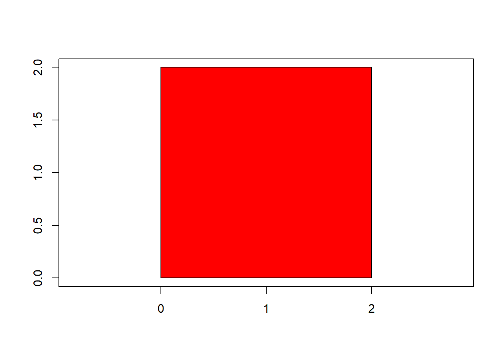
poly_area(square)[1] 1poly_perimeter(square)[1] 4Now, let’s see what happens when we start with a hexagon and increase the number of sides up to 1000.
shapes <- list( side6 = draw_n_tagon(6, plot = FALSE),
side12 = draw_n_tagon(12, plot = FALSE),
side24 = draw_n_tagon(24, plot = FALSE),
side100 = draw_n_tagon(100, plot = FALSE),
side500 = draw_n_tagon(500, plot = FALSE),
side100 = draw_n_tagon(1000, plot = FALSE))
plot_polygon(shapes, merge = FALSE)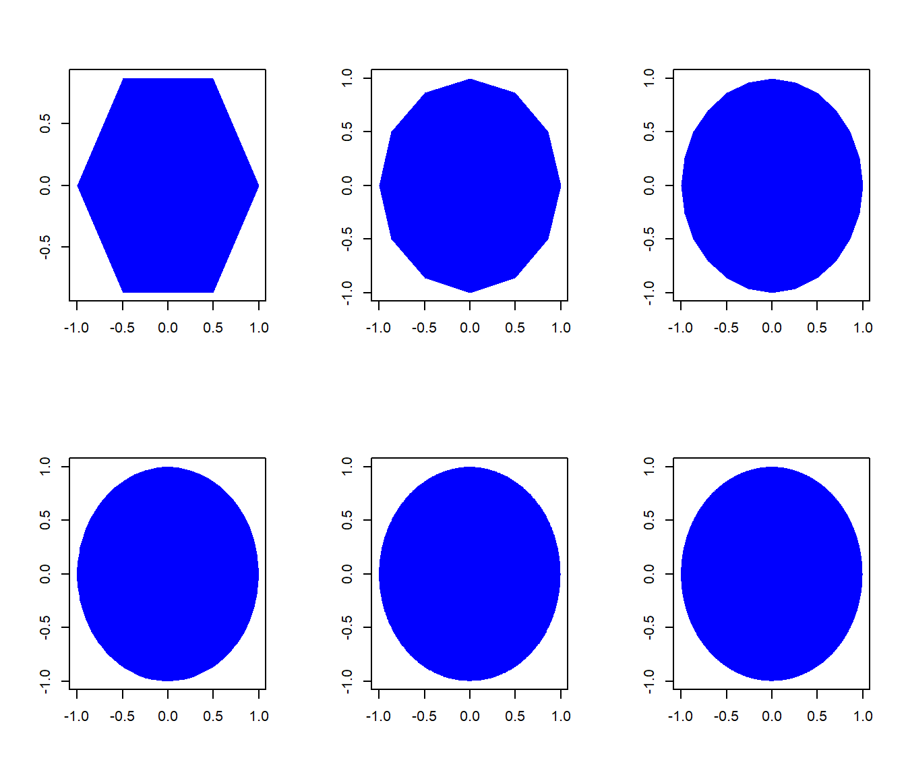
poly_area(shapes) side6 side12 side24 side100 side500 side100
2.598076 3.000000 3.105829 3.139526 3.141510 3.141572 poly_perimeter(shapes) side6 side12 side24 side100 side500 side100
6.000000 6.211657 6.265257 6.282152 6.283144 6.283175 Note that when \(n \to \infty\), the sum of the sides becomes the circumference of the circle, given by \(2 \pi r\), and the area becomes \(\pi r^2\). This is fun, but pliman is primarily designed for analyzing plant image analysis. So why use polygons? Let’s see how we can use these functions to get applicable information.
leaves <- image_import("ref_leaves.jpg", plot = TRUE)
# getting the outline of objects
cont <- object_contour(leaves, watershed = FALSE)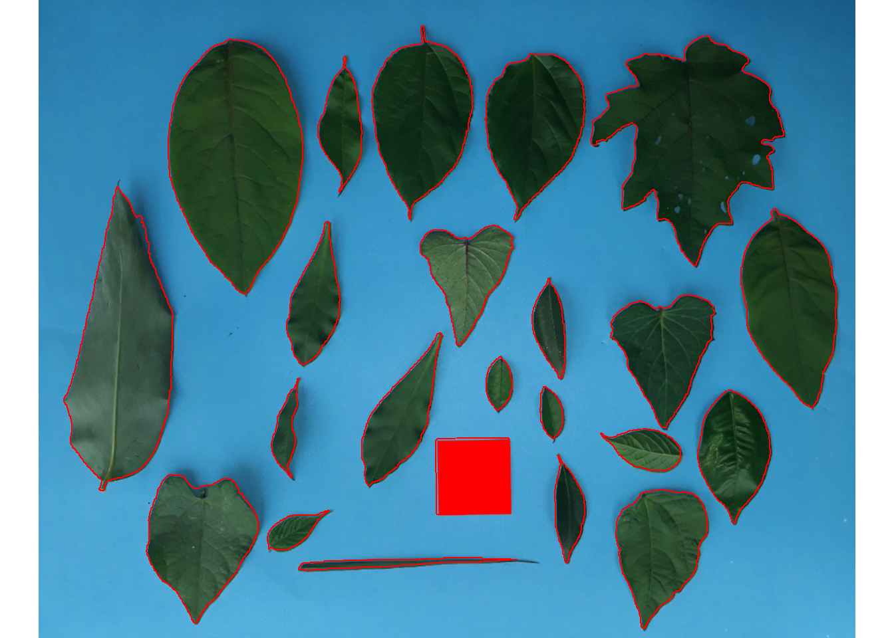
# plotting the polygon
plot_polygon(cont)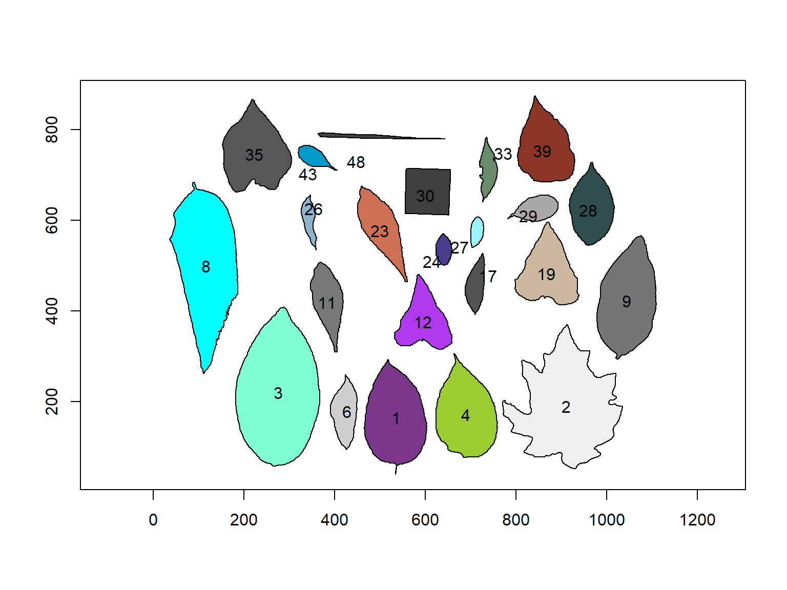
Nice! We can use the contours of any object to get useful information related to its shape. To reduce the amount of output, I will only use five samples: 1, 3, 12, and 24.
cont <- cont[c("1", "3", "12", "24")]
plot_polygon(cont)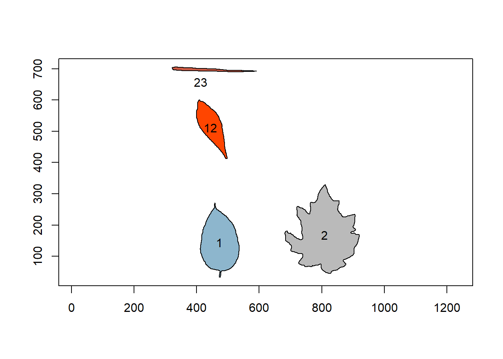
In the current version of pliman, you can calculate the following measurements. For more details, see Chen & Wang (2005)2, Claude (2008)3, and Montero et al. (2009)4.
2.1 Area
The area of a shape is calculated using Shoelace ’s formula (Lee and Lim, 2017)5, as follows
\[ A=\frac{1}{2}\left |\sum_{i=1}^{n}\left(x_{i} y_{i+1}-x_{i+1}y_{i}\right)\right| \]
poly_area(cont) 1 3 12 24
22619.5 46388.5 11087.0 1768.0 2.2 Perimeter
The perimeter is calculated as the sum of the Euclidean distance between all points on a shape. Distances can be obtained with poly_distpts().
poly_perimeter(cont) 1 3 12 24
669.5412 896.6783 514.5290 175.5097 # perimeter of a circle with radius 2
circle <- draw_circle(radius = 2, plot = FALSE)
poly_perimeter(circle)[1] 12.56635# check the result
2*pi*2[1] 12.566372.3 Radius
The radius of a pixel on the object’s contour is calculated as its distance from the object’s centroid(also called ‘center of mass’). These distances can be obtained with poly_centdist().
dist <- poly_centdist(cont)
# stats for radius
mean_list(dist) 1 3 12 24
88.75563 124.90380 62.67764 24.21182 min_list(dist) 1 3 12 24
63.58162 88.99496 39.17004 16.46777 max_list(dist) 1 3 12 24
134.19687 185.49516 98.89383 36.25669 sd_list(dist) 1 3 12 24
17.399797 27.191664 15.269774 5.728793 # average radius of circle above
poly_centdist(circle) |> mean_list()[1] 1.9999982.4 Length and width
The length and width of an object are calculated with poly_lw(), as the difference between the maximum and minimum of the x and y coordinates after the object has been aligned with poly_align().
poly_lw(cont) length width
1 254.5408 139.27127
3 352.6398 186.09592
12 170.3480 126.74856
24 70.0622 35.308682.5 Circularity, eccentricity, diameter and elongation
Circularity(Montero et al. 2009)6 is also called shape compactness, or measure of roundness of an object. It is given by \(C = P^2 / A\), where \(P\) is the perimeter and \(A\) is the area of the object.
poly_circularity(cont) 1 3 12 24
19.81854 17.33257 23.87842 17.42288 As the above measurement depends on the scale, normalized roundness can be used. In this case, a perfect circle is assumed to have circularity equal to 1. This measure is invariant under translation, rotation and scale transformations, given \(Cn = P^2 / 4 \pi A\)
poly_circularity_norm(cont) 1 3 12 24
1.577109 1.379282 1.900185 1.386468 # normalized circularity for different shapes
draw_square(plot =FALSE) |> poly_circularity_norm()[1] 1.27324draw_circle(plot=FALSE) |> poly_circularity_norm()[1] 1.000003poly_circularity_haralick() calculates the circularity of Haralick , CH(Haralick , 1974)7. The method is based on calculating all Euclidean distances from the object’s centroid to each contour pixel. With this set of distances, the mean(\(m\)) and the standard deviation(\(s\)) are calculated. These statistical parameters are used in a ratio that calculates CH as $CH = m/ sd $.
1 3 12 24
5.100958 4.593459 4.104687 4.226340 poly_convexity() Calculates the convexity of a shape using a ratio of the perimeter of the convex hull to the perimeter of the polygon.
poly_convexity(cont) 1 3 12 24
0.8541852 0.9065881 0.8338600 0.8891777 poly_eccentricity() Calculates the eccentricity of a shape using the ratio of the eigenvalues(coordinate inertia axes).
poly_eccentricity(cont) 1 3 12 24
0.3886748 0.3941193 0.5431220 0.3815938 poly_elongation() Calculates the elongation of an object as 1 - width / length
poly_elongation(cont) 1 3 12 24
0.4528529 0.4722776 0.2559433 0.4960381 poly_caliper() Calculates the gauge(also called Feret’s diameter).
poly_caliper(cont) 1 3 12 24
254.56826 352.75062 173.30320 70.06426 Users can use the poly_measures() function to calculate most object measurements in a single call.
measures <- poly_measures(cont) |> round_cols()
t(measures) 1 3 12 24
id 1.00 2.00 3.00 4.00
x 534.76 275.03 593.92 613.97
y 164.70 220.22 375.49 509.49
area 22619.50 46388.50 11087.00 1768.00
area_ch 23834.00 46946.50 12775.00 1818.00
perimeter 669.54 896.68 514.53 175.51
radius_mean 88.76 124.90 62.68 24.21
radius_min 63.58 88.99 39.17 16.47
radius_max 134.20 185.50 98.89 36.26
radius_sd 17.40 27.19 15.27 5.73
radius_ratio 2.11 2.08 2.52 2.20
diam_mean 177.51 249.81 125.36 48.42
diam_min 127.16 177.99 78.34 32.94
diam_max 268.39 370.99 197.79 72.51
caliper 254.57 352.75 173.30 70.06
length 254.54 352.64 170.35 70.06
width 139.27 186.10 126.75 35.31
solidity 0.95 0.99 0.87 0.97
convexity 0.85 0.91 0.83 0.89
elongation 0.45 0.47 0.26 0.50
circularity 19.82 17.33 23.88 17.42
circularity_haralick 3.65 3.27 2.57 2.87
circularity_norm 1.58 1.38 1.90 1.39
eccentricity 0.39 0.39 0.54 0.38If the image resolution is known, the measurements can be corrected with get_measures(). Image resolution can be obtained using a known distance in the image. In the example, the white square has a side of 5 cm. So using dpi() the resolution can be obtained. In this case, the dpi is ~50.
(color_measures <- get_measures(measures, dpi = 50)) id x y area area_ch perimeter radius_mean radius_min radius_max
1 1 534.76 164.70 58.373 61.507 34.013 4.509 3.230 6.817
3 2 275.03 220.22 119.712 121.152 45.551 6.345 4.521 9.423
12 3 593.92 375.49 28.612 32.968 26.138 3.184 1.990 5.024
24 4 613.97 509.49 4.563 4.692 8.916 1.230 0.837 1.842
radius_sd radius_ratio diam_mean diam_min diam_max caliper length width
1 0.884 0.107 9.018 6.460 13.634 12.932 12.931 7.075
3 1.381 0.106 12.690 9.042 18.846 17.920 17.914 9.454
12 0.776 0.128 6.368 3.980 10.048 8.804 8.654 6.439
24 0.291 0.112 2.460 1.673 3.684 3.559 3.559 1.794
solidity convexity elongation circularity circularity_haralick
1 0.95 0.85 0.45 19.82 3.65
3 0.99 0.91 0.47 17.33 3.27
12 0.87 0.83 0.26 23.88 2.57
24 0.97 0.89 0.50 17.42 2.87
circularity_norm eccentricity
1 1.58 0.39
3 1.38 0.39
12 1.90 0.54
24 1.39 0.38Some useful functions can be used to manipulate coordinates. In the following example I will show some features implemented in pliman. Just for simplicity, I’ll just use object 2.
o2 <- cont[["3"]]
plot_polygon(o2)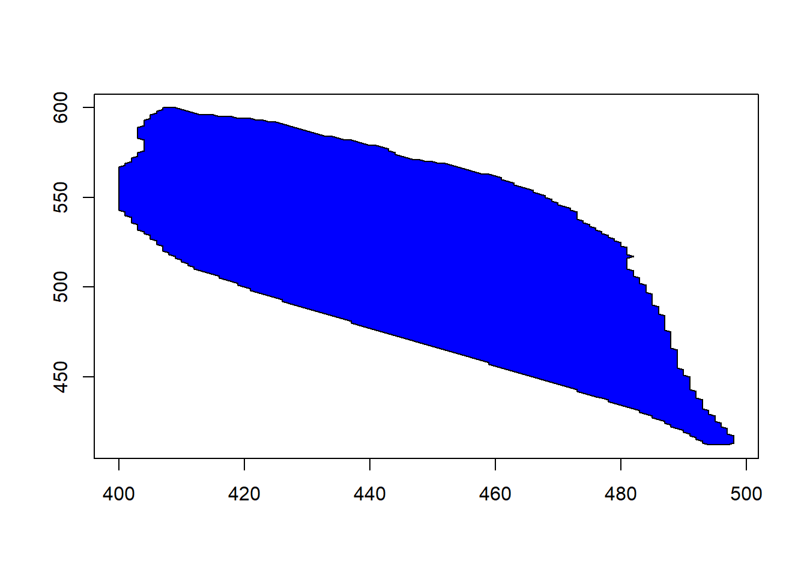
2.6 Rotate polygons
poly_rotate() can be used to rotate the polygon coordinates by an angle (0-360 degrees) in the trigonometric (anti-clockwise) direction.
rot <- poly_rotate(o2, angle = 45)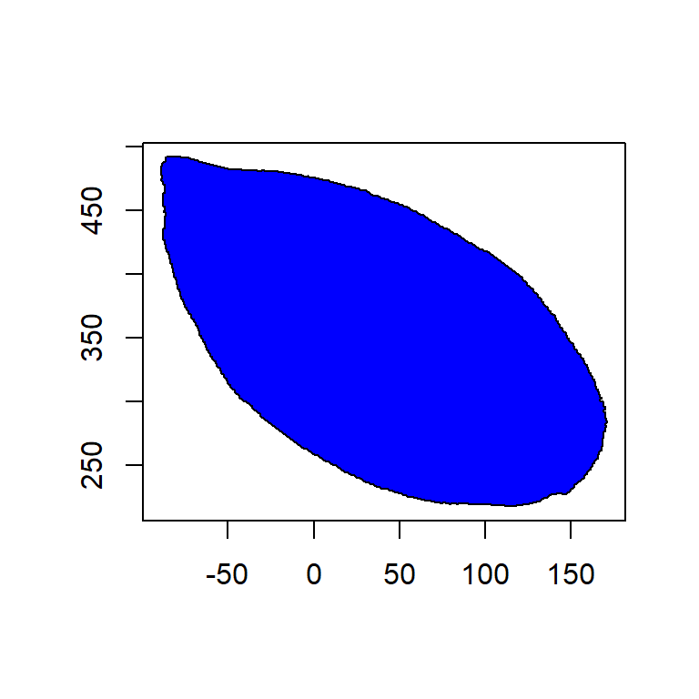
2.7 Invert polygons
poly_flip_x() and poly_flip_y() can be used to flip shapes along the x and y axis, respectively.
flipped <-
list(fx = poly_flip_x(o2),
fy = poly_flip_y(o2))
plot_polygon(flipped, merge = FALSE, aspect_ratio = 1)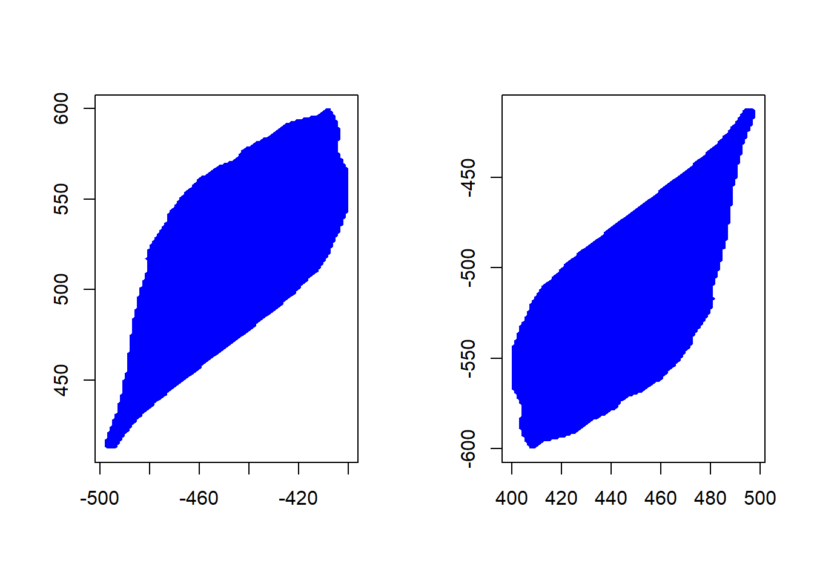
2.8 Perimeter sampling
poly_sample() samples n coordinates between existing points, and poly_sample_prop() samples a proportion of coordinates between existing ones.
# sample 50 coordinates
poly_sample(o2, n=10) |> plot_polygon()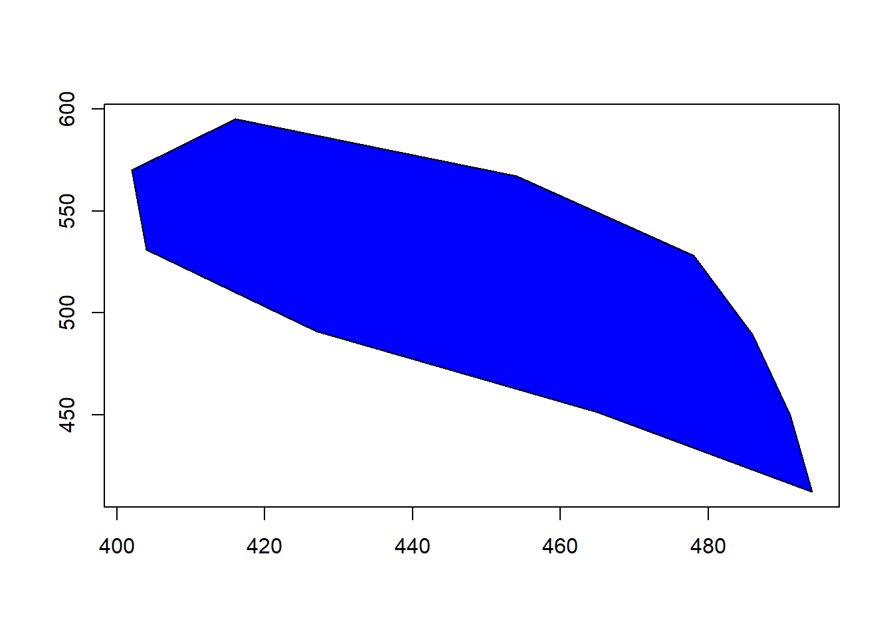
# sample 10% of coordinates
poly_sample_prop(o2, prop = 0.1) |> plot_polygon()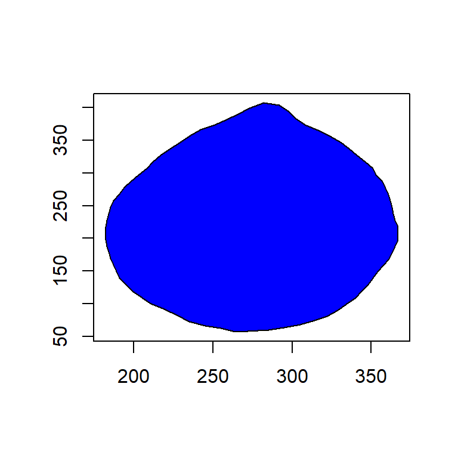
2.9 smoothing
poly_smooth() smooths the contour of a polygon by combining prop coordinate point samples and interpolating them using vertices vertices(default is 1000) .
smoothed <-
list( original = o2,
s1 = poly_smooth(o2, prop = 0.2, plot = FALSE),
s2 = poly_smooth(o2, prop = 0.1, plot = FALSE),
s1 = poly_smooth(o2, prop = 0.04, plot = FALSE)
)
plot_polygon(smoothed, merge = FALSE, ncol = 2, aspect_ratio = 1)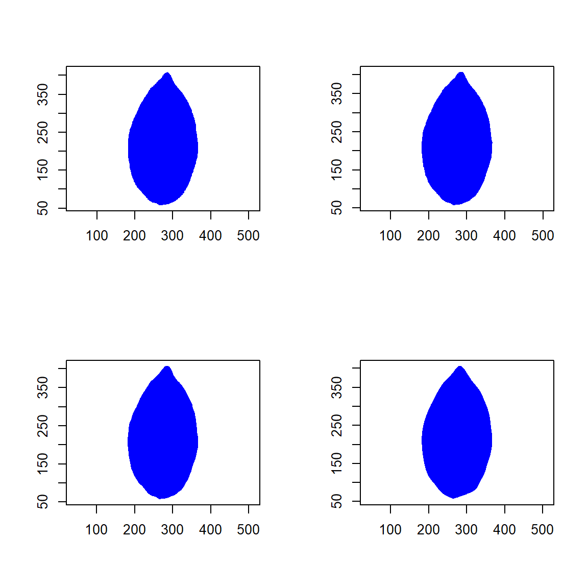
2.10 Noises
poly_jitter() adds a small amount of noise to a set of coordinates. See base::jitter() for more details.
set.seed(1)
c1 <- draw_circle(n = 200, plot = FALSE)
c2 <- draw_circle(n = 200, plot = FALSE) |>
poly_jitter(noise_x = 100,
noise_y = 100,
plot = FALSE)
plot_polygon(list(c1, c2), merge = FALSE)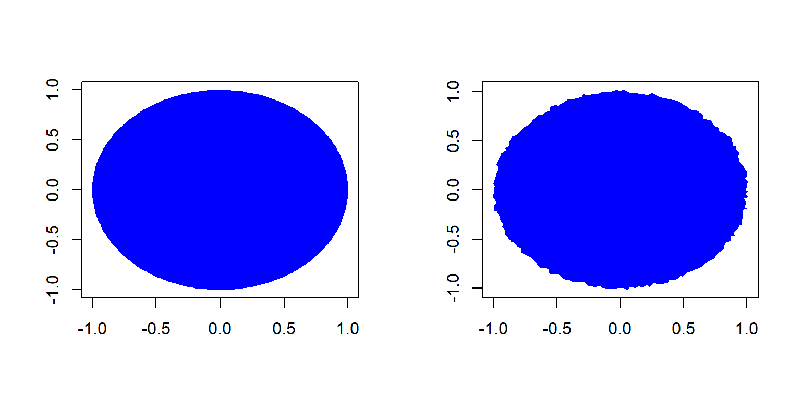
3 Analyzing objects
The functions seen so far can be used to obtain measurements of objects. However, for image analysis it is necessary to combine different functions (mainly object_contour() and poly_measures()). Also, almost always, several images need to be analyzed and repeating this process each time would be tedious and inefficient. To address these needs, users can use the analyze_objects() function. Let’s start with a simple example, using the object_300dpi.png image available on GitHub page. To facilitate importing images from this folder, an image_pliman() helper function is used.
library(pliman)
library(tidyverse)
## ── Attaching packages ─────────────────────────────────────── tidyverse 1.3.1 ──
## ✔ ggplot2 3.3.6 ✔ purrr 0.3.4
## ✔ tibble 3.1.7 ✔ dplyr 1.0.9
## ✔ tidyr 1.2.0 ✔ stringr 1.4.0
## ✔ readr 2.1.2 ✔ forcats 0.5.1
## ── Conflicts ────────────────────────────────────────── tidyverse_conflicts() ──
## ✖ forcats::%>%() masks stringr::%>%(), dplyr::%>%(), purrr::%>%(), tidyr::%>%(), tibble::%>%(), pliman::%>%()
## ✖ tibble::column_to_rownames() masks pliman::column_to_rownames()
## ✖ dplyr::filter() masks stats::filter()
## ✖ dplyr::lag() masks stats::lag()
## ✖ tibble::remove_rownames() masks pliman::remove_rownames()
## ✖ tibble::rownames_to_column() masks pliman::rownames_to_column()
library(metan)
## Registered S3 method overwritten by 'GGally':
## method from
## +.gg ggplot2
## |=========================================================|
## | Multi-Environment Trial Analysis (metan) v1.17.0 |
## | Author: Tiago Olivoto |
## | Type 'citation('metan')' to know how to cite metan |
## | Type 'vignette('metan_start')' for a short tutorial |
## | Visit 'https://bit.ly/pkgmetan' for a complete tutorial |
## |=========================================================|
##
## Attaching package: 'metan'
## The following object is masked from 'package:forcats':
##
## as_factor
## The following object is masked from 'package:dplyr':
##
## recode_factor
## The following object is masked from 'package:tidyr':
##
## replace_na
## The following objects are masked from 'package:tibble':
##
## column_to_rownames, remove_rownames, rownames_to_column
## The following objects are masked from 'package:pliman':
##
## %>%, column_to_rownames, remove_rownames, round_cols,
## rownames_to_column, set_wd_here
img <- image_pliman("objects_300dpi.jpg", plot = TRUE)
The image above was produced with Microsoft PowerPoint. It has a known resolution of 300 dpi(dots per inch) and displays four objects
- Larger square: 10 x 10 cm (100 cm\(^2\))
- Smaller square: 5 x 5 cm(25 cm\(^2\))
- Rectangle: 4 x 2 cm(8 cm\(^2\))
- Circle: 3 cm in diameter(~7.07 cm\(^2\))
To count the objects in the image we use analyze_objects() and inform the image(the only required argument). By default, the NB index is used for object segmentation.
img_res <- analyze_objects(img, marker = "id")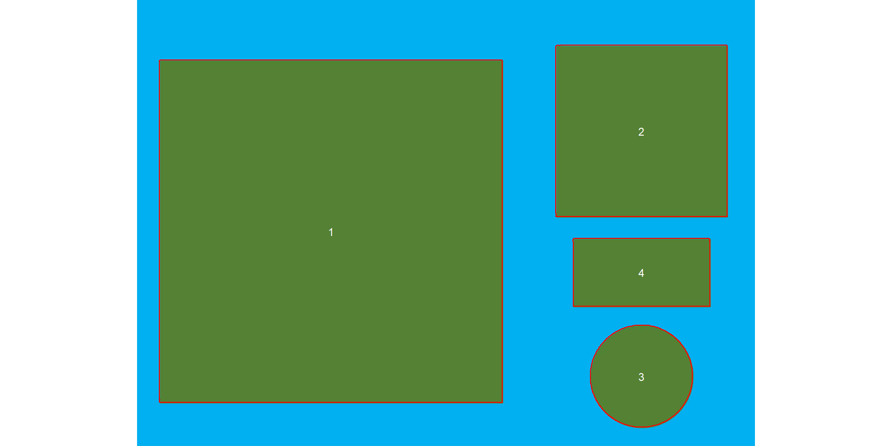
3.1 Adjusting object measurements
The results were stored in img_res. Since there is no scale declared in the example above, we have no idea about the actual area of objects in cm\(^2\), only in pixels. In this case, we use get_measures() to adjust pixel measurements to metric units.
There are two main ways to adjust object measurements (from pixels to cm, for example). The first is to declare the known area, perimeter or radius of a given object. The measure for the other objects will then be calculated by a simple rule of three. The second is by declaring a known image resolution in dpi(dots per inch). In this case, perimeter, area and radius will be adjusted by the dpi informed.
3.1.1 Declaring a known value
Since we know the area of the larger square (object 1), let’s adjust the area of the other objects in the image using this.
get_measures(img_res ,
id = 1,
area ~ 100)-----------------------------------------
measures corrected with:
object id: 1
area : 100
-----------------------------------------
Total : 40.009
Average : 13.336
----------------------------------------- id x y area area_ch perimeter radius_mean radius_min
2 2 1737.518 452.998 25.041 24.958 19.983 2.866 2.492
3 3 1737.571 1296.354 7.019 7.022 10.093 1.491 1.479
4 4 1737.966 939.007 7.949 7.907 11.913 1.668 0.988
radius_max radius_sd diam_mean diam_min diam_max major_axis minor_axis length
2 3.531 0.314 5.732 4.983 7.062 5.783 5.773 6.520
3 1.504 0.004 2.982 2.957 3.008 2.990 2.989 2.996
4 2.224 0.423 3.335 1.976 4.449 4.609 2.299 3.994
width radius_ratio eccentricity theta solidity convexity elongation
2 6.509 1.417 0.996 1.563 1.003 0.749 0.002
3 2.999 1.017 0.994 -1.547 1.000 0.905 -0.001
4 1.987 2.252 0.348 0.000 1.005 0.836 0.502
circularity circularity_haralick circularity_norm asm con cor var
2 15.946 9.127 1.273 0.913 0.051 0.731 1.095
3 14.512 423.369 1.161 0.829 0.078 0.781 1.178
4 17.854 3.947 1.430 0.853 0.069 0.786 1.161
idm sav sva sen ent dva den f12 f13
2 0.987 21.901 475.312 0.106 0.116 0.051 0.054 0.518 0.279
3 0.975 21.821 468.297 0.196 0.220 0.078 0.090 0.523 0.380
4 0.979 21.828 470.245 0.156 0.176 0.069 0.076 0.555 0.3563.1.2 Declaring the image resolution
If the image resolution is known, all measurements will be adjusted accordingly. Let’s see a numerical example with pixels_to_cm(). This function converts the number of pixels(* px *) into cm, considering the image resolution in dpi, as follows: \(cm = px \times(2.54 / dpi)\). As we know the number of pixels of the larger square, its perimeter in cm is given by
# number of pixels for the perimeter of the largest square
ls_px <- img_res$results$perimeter [1]
pixels_to_cm(px = ls_px , dpi = 300)[1] 39.9265The perimeter of object 1 adjusted by image resolution is very close to the known value (40 cm). Below, the values of all measures are adjusted by declaring the dpi argument in get_measures().
img_res_cor <- get_measures(img_res , dpi = 300)
t(img_res_cor) 1 2 3 4
id 1.000 2.000 3.000 4.000
x 668.995 1737.518 1737.571 1737.966
y 797.992 452.998 1296.354 939.007
area 99.812 24.994 7.006 7.934
area_ch 99.686 24.911 7.008 7.892
perimeter 39.926 19.964 10.083 11.902
radius_mean 5.728 2.863 1.489 1.666
radius_min 4.984 2.489 1.477 0.987
radius_max 7.057 3.528 1.502 2.222
radius_sd 0.629 0.314 0.004 0.422
diam_mean 11.456 5.726 2.979 3.332
diam_min 9.967 4.978 2.955 1.974
diam_max 14.114 7.055 3.005 4.445
major_axis 11.546 5.778 2.987 4.604
minor_axis 11.526 5.768 2.986 2.297
length 11.121 6.514 2.994 3.990
width 11.107 6.503 2.996 1.985
radius_ratio 1.416 1.417 1.017 2.252
eccentricity 0.997 0.996 0.994 0.348
theta -0.007 1.563 -1.547 0.000
solidity 1.001 1.003 1.000 1.005
convexity 0.750 0.749 0.905 0.836
elongation 0.001 0.002 -0.001 0.502
circularity 15.971 15.946 14.512 17.854
circularity_haralick 9.111 9.127 423.369 3.947
circularity_norm 1.273 1.273 1.161 1.430
asm 0.949 0.913 0.829 0.853
con 0.016 0.051 0.078 0.069
cor 0.797 0.731 0.781 0.786
var 1.040 1.095 1.178 1.161
idm 0.995 0.987 0.975 0.979
sav 21.946 21.901 21.821 21.828
sva 478.992 475.312 468.297 470.245
sen 0.063 0.106 0.196 0.156
ent 0.069 0.116 0.220 0.176
dva 0.016 0.051 0.078 0.069
den 0.024 0.054 0.090 0.076
f12 0.674 0.518 0.523 0.555
f13 0.260 0.279 0.380 0.3563.1.3 Understanding measurements
object_contour(img) %>% # get the contour of objects
poly_mass() %>% # computes center of mass and minimum and maximum radii
plot_mass() # plot the measurements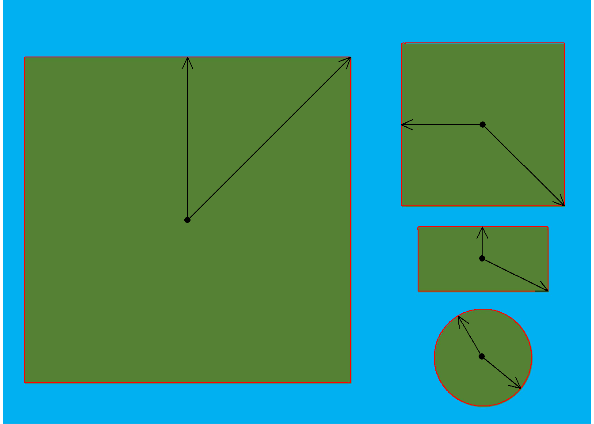
- Larger square:
- The minimum diameter(a = 9.97) can be considered as the side of the square
- The maximum diameter, given by \(a \sqrt {2}\) can be considered the diagonal of the square (\(9.97 \sqrt {2} = 14,099 \approx 14,105\)
t(img_res_cor) 1 2 3 4
id 1.000 2.000 3.000 4.000
x 668.995 1737.518 1737.571 1737.966
y 797.992 452.998 1296.354 939.007
area 99.812 24.994 7.006 7.934
area_ch 99.686 24.911 7.008 7.892
perimeter 39.926 19.964 10.083 11.902
radius_mean 5.728 2.863 1.489 1.666
radius_min 4.984 2.489 1.477 0.987
radius_max 7.057 3.528 1.502 2.222
radius_sd 0.629 0.314 0.004 0.422
diam_mean 11.456 5.726 2.979 3.332
diam_min 9.967 4.978 2.955 1.974
diam_max 14.114 7.055 3.005 4.445
major_axis 11.546 5.778 2.987 4.604
minor_axis 11.526 5.768 2.986 2.297
length 11.121 6.514 2.994 3.990
width 11.107 6.503 2.996 1.985
radius_ratio 1.416 1.417 1.017 2.252
eccentricity 0.997 0.996 0.994 0.348
theta -0.007 1.563 -1.547 0.000
solidity 1.001 1.003 1.000 1.005
convexity 0.750 0.749 0.905 0.836
elongation 0.001 0.002 -0.001 0.502
circularity 15.971 15.946 14.512 17.854
circularity_haralick 9.111 9.127 423.369 3.947
circularity_norm 1.273 1.273 1.161 1.430
asm 0.949 0.913 0.829 0.853
con 0.016 0.051 0.078 0.069
cor 0.797 0.731 0.781 0.786
var 1.040 1.095 1.178 1.161
idm 0.995 0.987 0.975 0.979
sav 21.946 21.901 21.821 21.828
sva 478.992 475.312 468.297 470.245
sen 0.063 0.106 0.196 0.156
ent 0.069 0.116 0.220 0.176
dva 0.016 0.051 0.078 0.069
den 0.024 0.054 0.090 0.076
f12 0.674 0.518 0.523 0.555
f13 0.260 0.279 0.380 0.3563.2 Texture features
The function computes 13 Haralick texture features for each object based on a gray-level co-occurrence matrix (Haralick et al. 1979)8. Haralick features depend on the configuration of the parameters har_nbins and har_scales. har_nbins controls the number of bins used to compute the Haralick matrix. A smaller har_nbins can give more accurate estimates of the correlation because the number of events per bin is higher. While a higher value will give more sensitivity. har_scales controls the number of scales used to compute the Haralick features. Since Haralick features compute the correlation of intensities of neighboring pixels, it is possible to identify textures with different scales, e.g., a texture that is repeated every two pixels or 10 pixels. By default, the Haralick features are computed with the R band. To chance this default, use the argument har_band. For example, har_band = 2 will compute the features with the green band.
The followig measures are returned (fore more details, see this post)
-
asm: The angular second-moment feature. -
con: The contrast feature -
cor: Correlation measures the linear dependency of gray levels of neighboring pixels. -
var: The variance of gray levels pixels. -
idm: The Inverse Difference Moment (IDM), i.e., the local homogeneity. -
sav: The Sum Average. -
sva: The Sum Variance. -
sen: Sum Entropy. -
dva: Difference Variance. -
den: Difference Entropy -
f12: Difference Variance. -
f13: The angular second-moment feature.
3.3 Single image processing
The analyze_objects() function calculates a range of measurements that can be used to study the shape and texture of objects, such as leaves. In the following example, I show how to plot the length and width of each leaf in the following image.
leaves <- image_import("folhas.jpg", plot = TRUE)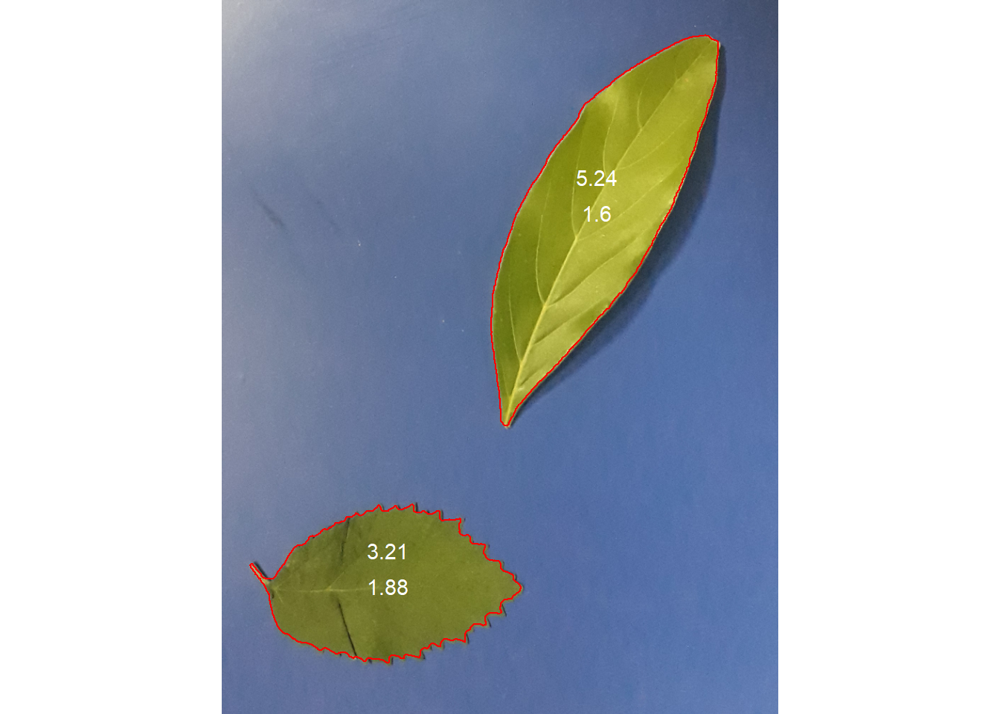
leaves_meas <-
analyze_objects(leaves ,
watershed = FALSE,
col_background = "black")
leaves_cor <- get_measures(leaves_meas , dpi = 300)
t(leaves_cor) 1 2
id 1.000 2.000
x 528.542 234.020
y 299.984 825.798
area 5.862 3.879
area_ch 5.946 4.227
perimeter 12.157 9.942
radius_mean 1.591 1.145
radius_min 0.735 0.838
radius_max 2.683 1.677
radius_sd 0.582 0.219
diam_mean 3.181 2.290
diam_min 1.470 1.675
diam_max 5.366 3.353
major_axis 4.843 2.864
minor_axis 1.563 1.744
length 5.241 3.210
width 1.602 1.883
radius_ratio 3.650 2.002
eccentricity 0.136 0.425
theta -1.057 -0.087
solidity 0.986 0.918
convexity 0.913 0.791
elongation 0.694 0.413
circularity 25.209 25.478
circularity_haralick 2.735 5.219
circularity_norm 2.021 2.047
asm 0.044 0.172
con 1.120 0.495
cor 0.942 0.814
var 10.687 2.328
idm 0.778 0.814
sav 38.905 28.391
sva 1449.029 763.014
sen 1.337 0.856
ent 1.573 1.002
dva 1.120 0.495
den 0.407 0.328
f12 0.526 0.352
f13 0.822 0.590# plot width and length
plot_measures(leaves_cor , measure = "width")
plot_measures(leaves_cor , measure = "length", vjust = 50)
Here, we will count the grains in the grains.jpg image. This image has a cyan background and contains 90 soybeans that touch each other. The analyze_objects() function segments the image using the normalized blue index by default, as follows \(NB =(B /(R + G + B))\), where R, G and B are the red, green and blue bands. Note that if the image is contained in the default directory, it is not necessary to import it. Just enter the image name in quotes in the img argument(e.g., img = "grains").
In this example, objects are counted and segmented objects are colored with random colors using the show_segmentation = TRUE argument. Users can set show_contour = FALSE to remove the contour line and identify the objects (in this example, the grains) using the marker = "id" arguments. The background color can also be changed with col_background.
count <-
analyze_objects("grains",
show_segmentation = TRUE,
show_contour = FALSE,
marker = "id")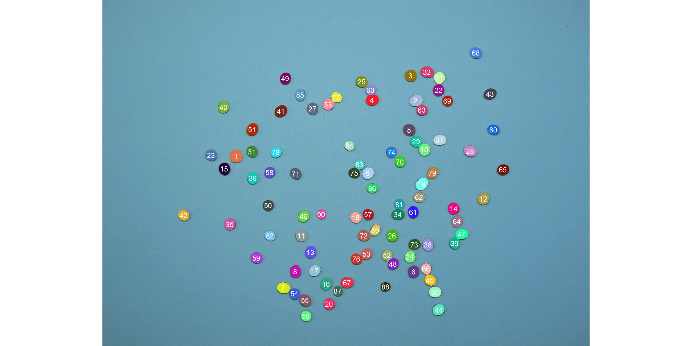
count$statistics stat value
1 n 90.00000
2 min_area 446.00000
3 mean_area 675.45556
4 max_area 842.00000
5 sd_area 71.65494
6 sum_area 60791.00000# Get the measurements of the object
measurements <- get_measures(count)
head(measurements) id x y area area_ch perimeter radius_mean radius_min radius_max
1 1 351.890 411.183 842 810 104.497 15.911 14.847 16.897
2 2 824.970 264.736 822 801 107.083 15.740 13.563 17.782
3 3 811.263 198.825 738 712 98.497 14.876 14.129 15.379
4 4 710.004 262.800 761 733 100.255 15.112 12.886 17.048
5 5 807.122 341.979 757 724 98.841 15.072 13.745 16.714
6 6 818.892 714.864 742 714 98.841 14.906 13.775 16.272
radius_sd diam_mean diam_min diam_max major_axis minor_axis length width
1 0.465 31.822 29.695 33.793 33.506 32.027 33.480 32.195
2 1.201 31.480 27.126 35.565 35.775 29.288 35.413 29.731
3 0.309 29.752 28.258 30.759 30.739 30.581 30.445 30.323
4 1.175 30.224 25.773 34.097 34.365 28.228 33.818 27.708
5 0.771 30.144 27.489 33.428 33.056 29.186 33.005 29.399
6 0.635 29.812 27.550 32.543 32.191 29.373 31.766 29.094
radius_ratio eccentricity theta solidity convexity elongation circularity
1 1.138 0.938 1.224 1.040 0.936 0.038 12.969
2 1.311 0.742 -0.327 1.026 0.923 0.160 13.950
3 1.088 0.975 -1.283 1.037 0.904 0.004 13.146
4 1.323 0.749 -0.261 1.038 0.882 0.181 13.208
5 1.216 0.812 0.544 1.046 0.867 0.109 12.906
6 1.181 0.864 -1.197 1.039 0.886 0.084 13.166
circularity_haralick circularity_norm asm con cor var idm sav
1 34.181 1.092 0.066 0.850 0.912 5.837 0.733 32.747
2 13.107 1.179 0.080 0.975 0.883 5.179 0.746 33.476
3 48.152 1.112 0.059 0.888 0.920 6.566 0.706 34.419
4 12.857 1.117 0.053 0.917 0.911 6.166 0.724 33.375
5 19.539 1.091 0.065 0.855 0.909 5.681 0.727 32.003
6 23.486 1.115 0.058 0.847 0.924 6.564 0.720 30.684
sva sen ent dva den f12 f13
1 1014.530 1.187 1.418 0.850 0.421 0.445 0.745
2 1061.010 1.145 1.356 0.975 0.429 0.445 0.735
3 1121.793 1.247 1.482 0.888 0.428 0.461 0.767
4 1052.364 1.241 1.478 0.917 0.429 0.456 0.763
5 967.498 1.187 1.407 0.855 0.416 0.447 0.745
6 889.380 1.223 1.446 0.847 0.419 0.465 0.764In the following example, we will select objects with an area above the average of all objects using lower_size = 719.1.
analyze_objects("grains",
marker = "id",
lower_size = 719.1)
Users can also use the topn _* arguments to select the n objects based on the smallest or largest areas. Let’s see how to select the 5 grains with the smallest area, showing the original grains on a blue background. We will also use the my_index argument to choose a custom index to segment the image. Just for comparison, we will explicitly set the normalized blue index by calling my_index = "B /(R + G + B)".
analyze_objects("grains",
marker = "id",
topn_lower = 5,
col_background = "salmon",
my_index = "B /(R + G + B)") # normalized blue(NB)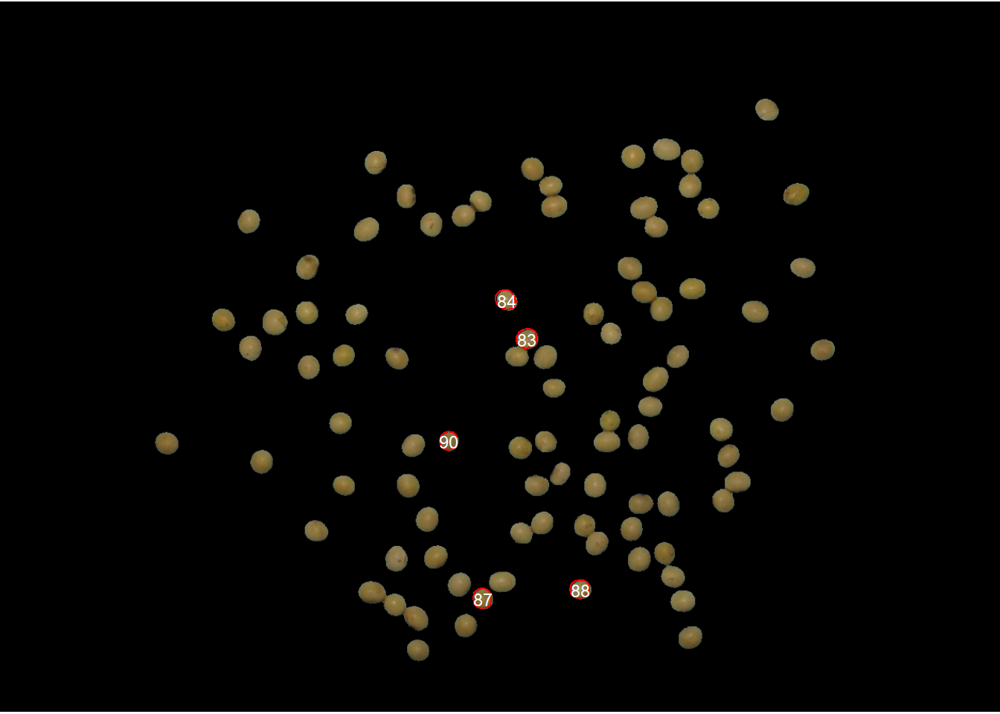
3.4 Batch processing
In image analysis, it is often necessary to process more than one image. For example, in plant breeding, the number of grains per plant(eg wheat) is often used in indirect selection of high-yielding plants. In pliman, batch processing can be done when the user declares the pattern argument.
To speed up processing time, especially for large numbers of images, the parallel = TRUE argument can be used. In this case, images are processed asynchronously (in parallel) in separate R sessions running in the background on the same machine. The number of sections is set to 50% of available cores. This number can be explicitly controlled with the workers argument.
system.time(
list_res <- analyze_objects(pattern = "img_sb", show_image = FALSE)
)Processing image img_sb_50_1 |=== | 8% 00:00:00
Processing image img_sb_50_10 |===== | 15% 00:00:01
Processing image img_sb_50_11 |======== | 23% 00:00:01
Processing image img_sb_50_12 |========== | 31% 00:00:02
Processing image img_sb_50_13 |============= | 38% 00:00:02
Processing image img_sb_50_2 |================ | 46% 00:00:02
Processing image img_sb_50_3 |=================== | 54% 00:00:04
Processing image img_sb_50_4 |====================== | 62% 00:00:05
Processing image img_sb_50_5 |======================== | 69% 00:00:06
Processing image img_sb_50_6 |=========================== | 77% 00:00:07
Processing image img_sb_50_7 |============================== | 85% 00:00:07
Processing image img_sb_50_8 |================================ | 92% 00:00:08
Processing image img_sb_50_9 |===================================| 100% 00:00:09
--------------------------------------------
Image Objects
img_sb_50_1 100
img_sb_50_10 29
img_sb_50_11 23
img_sb_50_12 15
img_sb_50_13 7
img_sb_50_2 90
img_sb_50_3 83
img_sb_50_4 75
img_sb_50_5 70
img_sb_50_6 60
img_sb_50_7 57
img_sb_50_8 48
img_sb_50_9 36
--------------------------------------------Done! usuário sistema decorrido
9.52 0.47 10.00 # parallel processing
# 6 multiple sections (50% of my pc's cores)
system.time(
list_res <-
analyze_objects(pattern = "img_sb",
show_image = FALSE,
parallel = TRUE)
)Image processing using multiple sessions (6). Please wait.--------------------------------------------
Image Objects
img_sb_50_1 100
img_sb_50_10 29
img_sb_50_11 23
img_sb_50_12 15
img_sb_50_13 7
img_sb_50_2 90
img_sb_50_3 83
img_sb_50_4 75
img_sb_50_5 70
img_sb_50_6 60
img_sb_50_7 57
img_sb_50_8 48
img_sb_50_9 36
--------------------------------------------Done! usuário sistema decorrido
0.06 0.03 4.94 4 Object coordinates
Users can get the coordinates for all desired objects with object_coord(). When the id argument is set to NULL (default), a bounding rectangle is drawn including all objects. Use id = "all" to get the coordinates of all objects in the image or use a numeric vector to indicate the objects to calculate the coordinates. Note that the watershed = FALSE argument is used to avoid unique objects being split up into multiple objects by the watershed segmentation algorithm.
leaves <- image_import("folhas.jpg", plot = TRUE)
# get the id of each object
object_id(leaves, watershed = FALSE)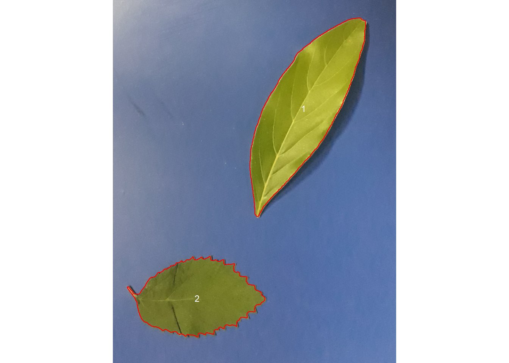
# Get the coordinates of a bounding rectangle around all objects
object_coord(leaves, watershed = FALSE)
$col_min
[1] 49
$col_max
[1] 937
$row_min
[1] 40
$row_max
[1] 702# Get coordinates for all objects
object_coord(leaves ,
id = "all",
watershed = FALSE)
$col_min
[1] 49 710
$col_max
[1] 603 937
$row_min
[1] 379 40
$row_max
[1] 702 425# Get the coordinates of objects 1 and 2
# 20 border pixels
object_coord(leaves ,
id = 1,
edge = 20,
watershed = FALSE)
$col_min
[1] 31
$col_max
[1] 621
$row_min
[1] 361
$row_max
[1] 7205 Isolating objects
Knowing the coordinates of each object, it is possible to isolate it. The object_isolate() function is used for this. In the following example, I will isolate object 1 and set a 10-pixel border around the object.
id1 <-
object_isolate(leaves ,
watershed = FALSE,
id = 1,
edge = 10)
plot(id1)
6 Including objects in a list
object_split() can be used to split up a series of objects contained in a single image into a list, where each element is one object. By default, the background is removed and shown in white.
list <- object_split(leaves, watershed = FALSE)==============================
Summary of the procedure
==============================
Number of objects: 2
Average area : 67935
Minimum area : 54096
Maximum area : 81774
Objects created : 2
==============================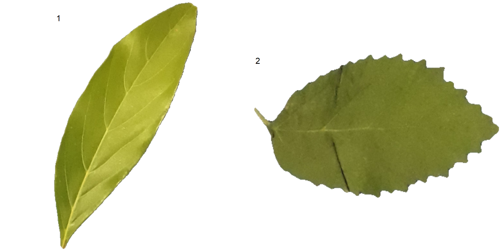
str(list)List of 2
$ 1:Formal class 'Image' [package "EBImage"] with 2 slots
.. ..@ .Data : num [1:330, 1:561, 1:3] 1 1 1 1 1 1 1 1 1 1 ...
.. ..@ colormode: int 2
.. ..$ dim: int [1:3] 330 561 3
$ 2:Formal class 'Image' [package "EBImage"] with 2 slots
.. ..@ .Data : num [1:390, 1:234, 1:3] 1 1 1 1 1 1 1 1 1 1 ...
.. ..@ colormode: int 2
.. ..$ dim: int [1:3] 390 234 37 RGB values for each object
To get the RGB intensity of each object in the image, we use the object_rgb = TRUE argument in the analyze_objects() function. In the following example, we will use the R, G and B bands and their normalized values. The pliman_indexes() function returns the indexes available in the package. To compute a specific index, simply enter a formula containing the values of R, G, or B (e.g. object_index = "B/G+R").
img <- image_import("green.jpg", plot = TRUE)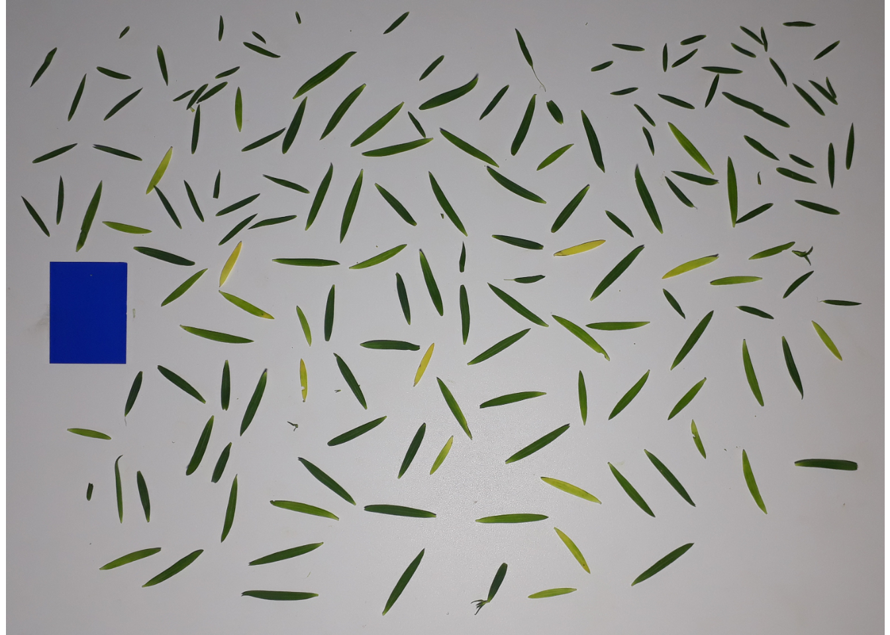
(indx <- pliman_indexes()) [1] "R" "G" "B" "NR" "NG" "NB" "GB" "RB" "GR"
[10] "BI" "BIM" "SCI" "GLI" "HI" "NGRDI" "NDGBI" "NDRBI" "I"
[19] "S" "VARI" "HUE" "HUE2" "BGI" "L" "GRAY" "GLAI" "SAT"
[28] "CI" "SHP" "RI" soy_green <-
analyze_objects(img ,
object_index = indx [1:6], # R:NB
marker = "id",
marker_col = "black",
col_background = "white",
show_contour = FALSE)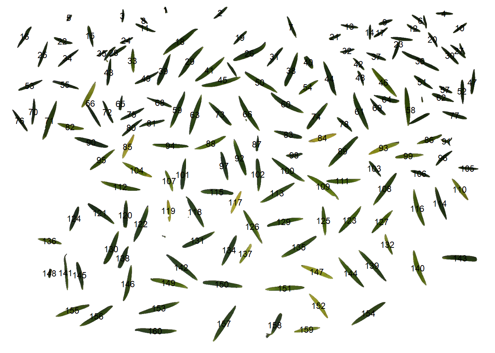
# PCA with the indices
ind <- summary_index(soy_green, type ="var")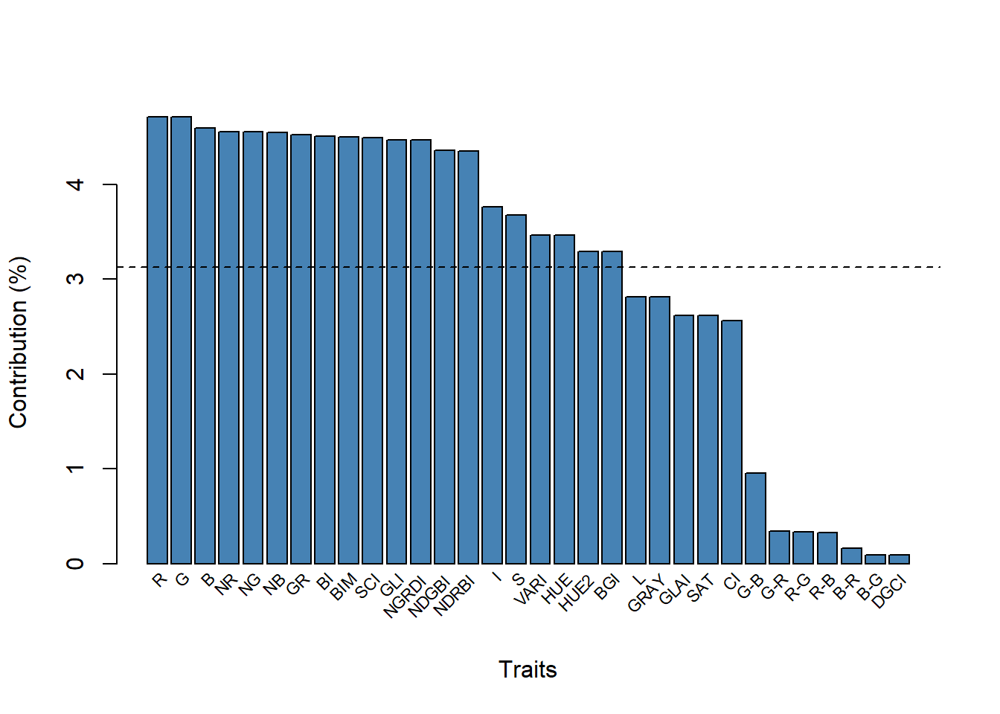
The R index provided the greatest contribution to the variation of PC1. The biplot containing the indices (variables) and the grains (individuals) can be seen below.
Now, let’s plot the R index on each object
plot(img)
plot_measures(soy_green ,
measure = "R",
col = " black ")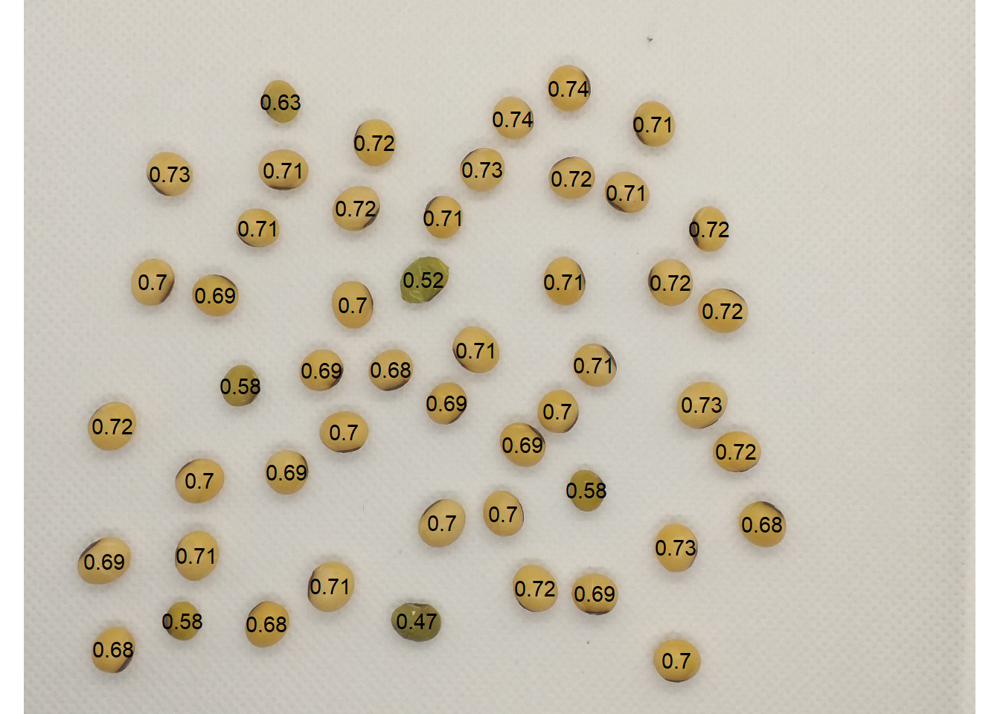
It seems that grains with average red (R) value less than 0.6 can be considered greenish seeds. Users can then work with this feature and adapt it to their case.
report <-
summary_index(soy_green ,
index = "R",
cut_point = 0.6,
plot = FALSE)
ids <- report$ids
report$between_id n nsel prop mean_index_sel mean_index_nsel
1 50 5 0.1 0.5453667 0.7062646report$within_id[ids,] id x y n_less n_greater less_ratio greater_ratio
29 29 520.4530 364.3528 2720 163 0.943 0.057
45 45 282.2126 502.3140 1165 848 0.579 0.421
46 46 732.0210 638.1693 1575 380 0.806 0.194
48 48 207.0810 808.0929 841 936 0.473 0.527
50 50 511.4567 808.5150 2387 15 0.994 0.006# ratio of pixels of each object(above and below 0.6)
barplot(t(report$within_id [,6:7]) |> as.matrix(),
legend = c("R < 0.6", "R > 0.6"))
In the following graph, I plot the distribution of the greenish and non-greenish R, G, and B values.
# distribution of RGB values
rgbs <-
soy_green$object_rgb |>
mutate(type = ifelse(id %in% ids, " Greenish ", " No greenish ")) |>
select(-id) |>
pivot_longer(-type)
ggplot(rgbs, aes(x = value)) +
geom_density(aes(fill = name), alpha = 0.5) +
facet_wrap(~ type)
Now, using the ids of each grain, I plot the values only in the greenish ones.
# plot
plot(img)
plot_measures(soy_green ,
id = ids,
measure = "R",
col = "black")
cont <- object_contour(img , show_image = FALSE)
plot_contour(cont,
id = ids,
col = "red")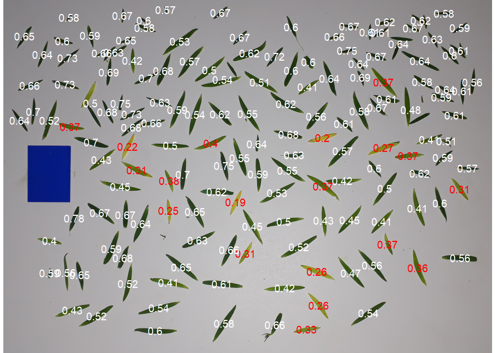
Tip
When there are many objects, the parallel = TRUE argument will speed up extracting the RGB values. In the following example, an image with 1343 grains of Vicia cracca is analyzed. The indices "R" and "R/G" are computed. Grains with an average red value greater than 0.25 are highlighted.
library(pliman)
img2 <- image_import("vicia.jpg")
vicia <-
analyze_objects(img2,
index = "B",
object_index = "R",
show_image = FALSE,
parallel = TRUE)
summary_index <-
summary_index(vicia ,
index = "R",
cut_point = 0.25,
select_higher = TRUE)
count2 <-
object_contour(img2,
index = "B",
show_image = FALSE)
ids2 <- summary_index$ids
plot_contour(count2, col = "red")8 Leaf area
8.1 Known resolution
leaves <- image_import(image = "ref_leaves.jpg", plot = TRUE)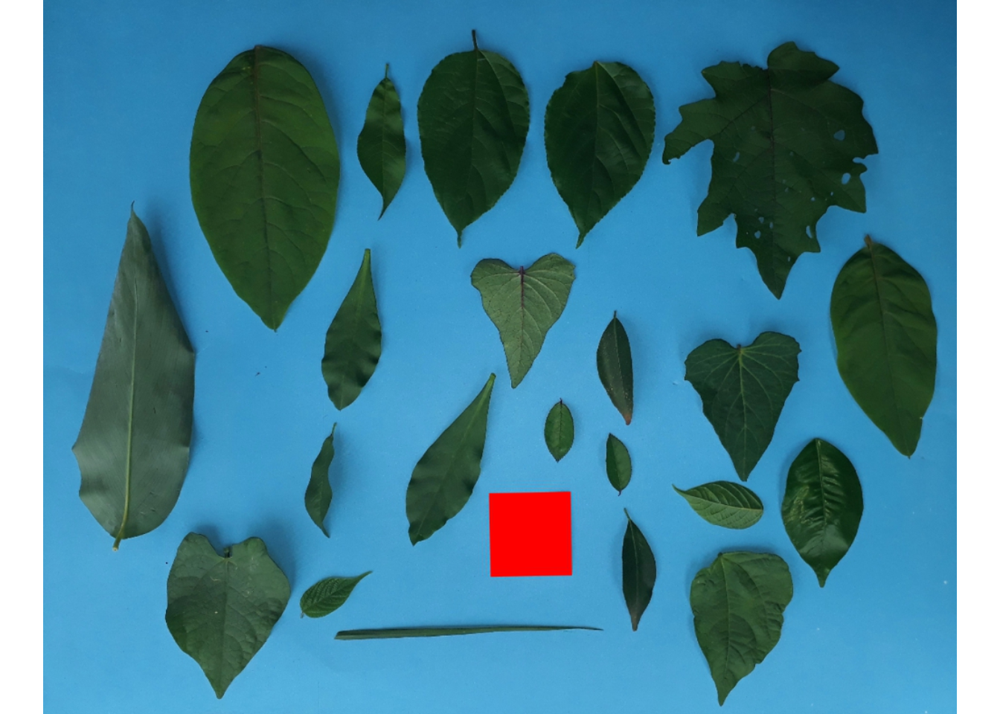
af <-
analyze_objects(leaves ,
watershed = FALSE,
show_contour = FALSE,
col_background = "black",
marker = "id")
af_cor <- get_measures(af, dpi = 50.5)
plot_measures(af_cor ,
measure = "area",
vjust = -30,
col = " red ")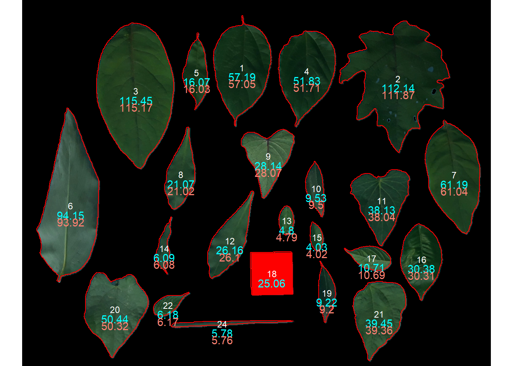
8.2 Reference object (dev version)
8.2.1 Single images
The reference argument can now be used to correct the object measures even when images with different shooting distances are used. In this example, the leaf area of the ref_leaves image is quantified and corrected considering a 5 x 5 (25 cm\(^2\)) white square as the reference object. For this, it is necessary to provide color palettes referring to the background (background), leaves (foreground) and the reference object (reference). Also, the area of the reference object needs to be informed in reference_area.
library(pliman)
img <- image_import(pattern = "ref_", plot = TRUE)
area <-
analyze_objects(img = "ref_leaves",
foreground = "ref_folha",
background = "ref_back",
reference = "ref_ref",
reference_area = 25,
marker = "area",
watershed = FALSE)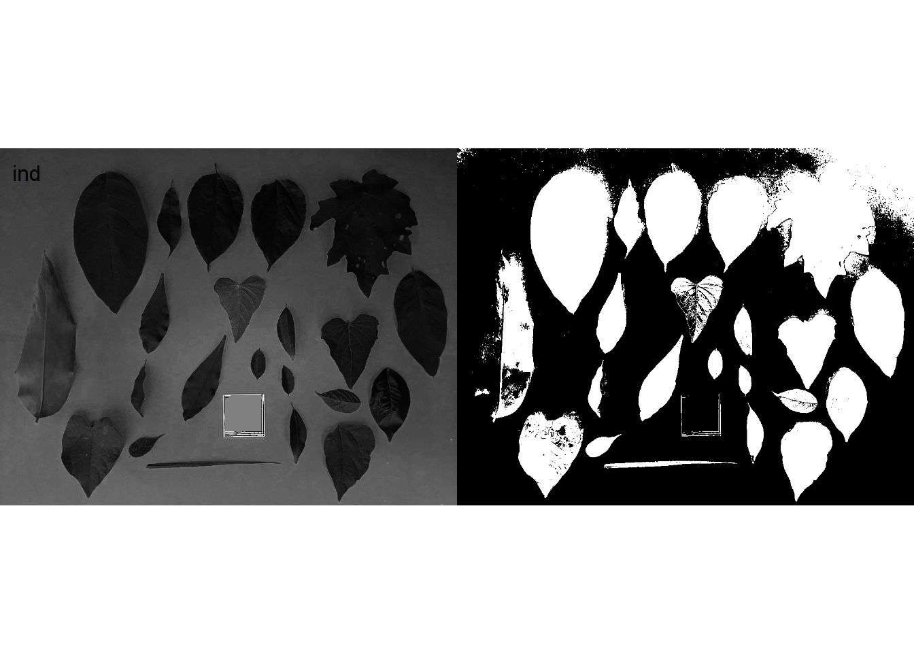
8.2.2 Multiple images
res <-
analyze_objects(pattern = "img_",
dir_original = "linhaca",
foreground = "folhalin",
background = "fundolin",
reference = "reflin",
reference_area = 20,
watershed = FALSE,
filter = 3)Processing image img_A1_B1 |===== | 12% 00:00:00 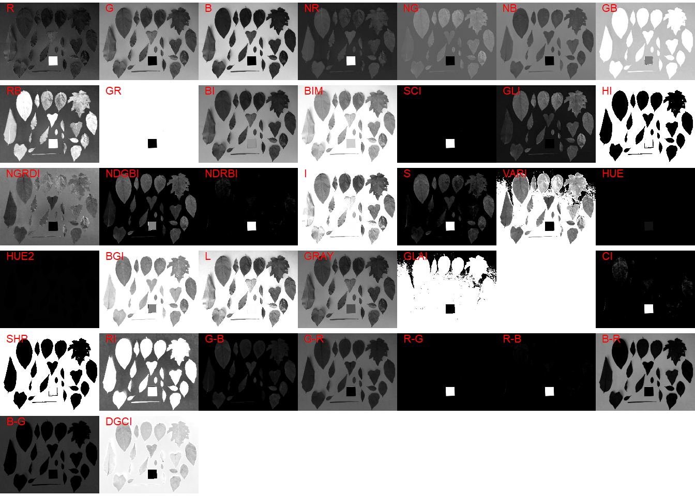
Processing image img_A1_B2 |========= | 25% 00:00:01 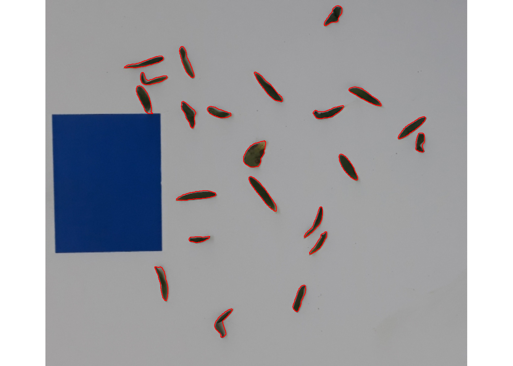
Processing image img_A2_B1 |============== | 38% 00:00:03 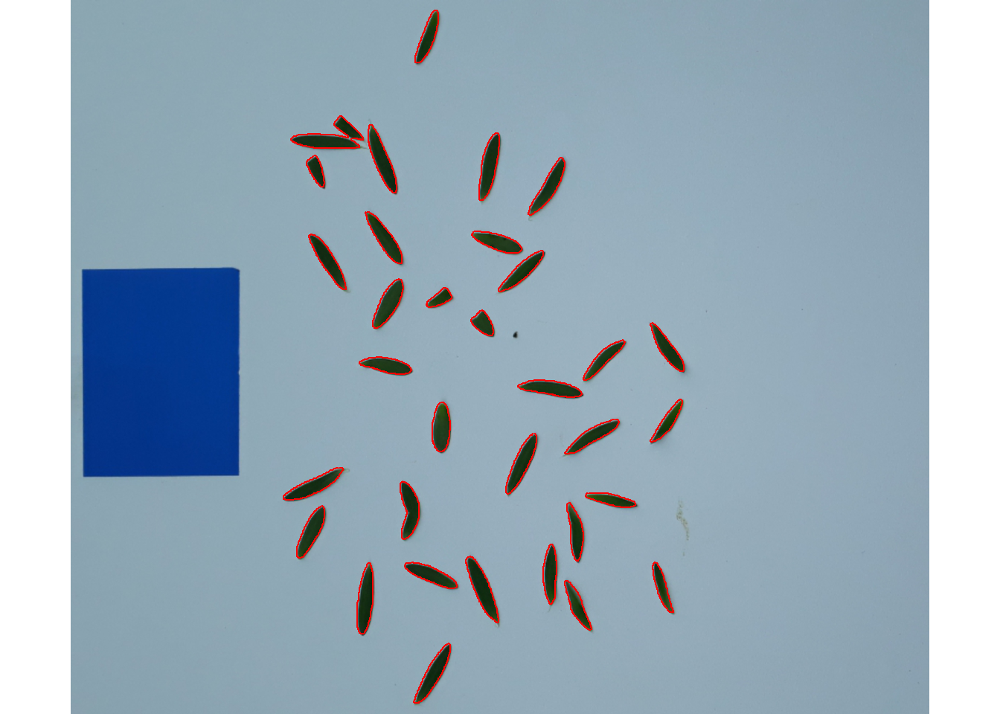
Processing image img_A2_B2 |================== | 50% 00:00:06 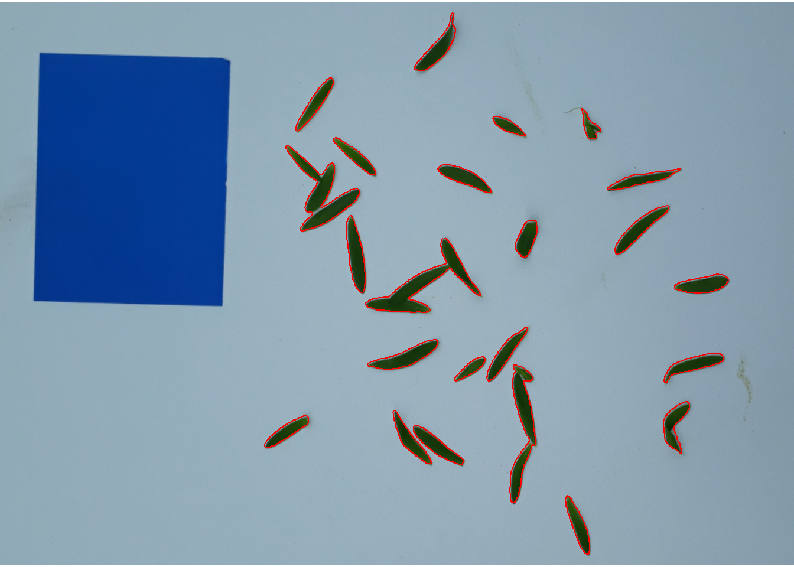
Processing image img_A3_B1 |======================= | 62% 00:00:08 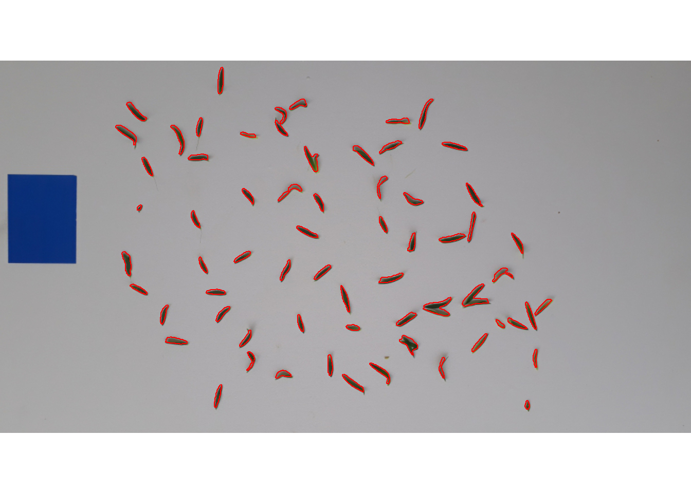
Processing image img_A3_B2 |============================ | 75% 00:00:12 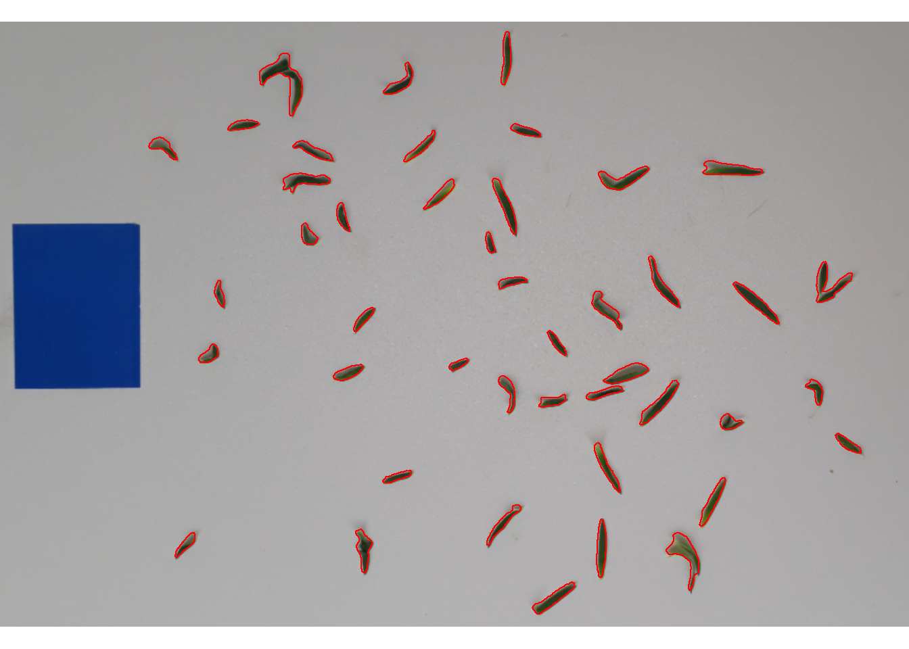
Processing image img_A4_B1 |================================ | 88% 00:00:14 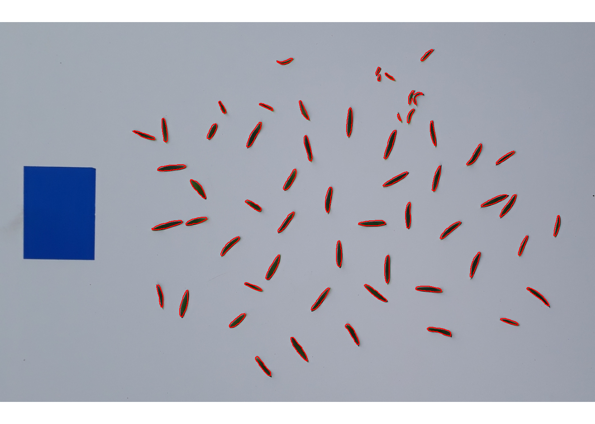
Processing image img_A4_B2 |=====================================| 100% 00:00:16 --------------------------------------------
Image Objects
img_A1_B1 19
img_A1_B2 22
img_A2_B1 33
img_A2_B2 23
img_A3_B1 65
img_A3_B2 44
img_A4_B1 56
img_A4_B2 57
--------------------------------------------Done!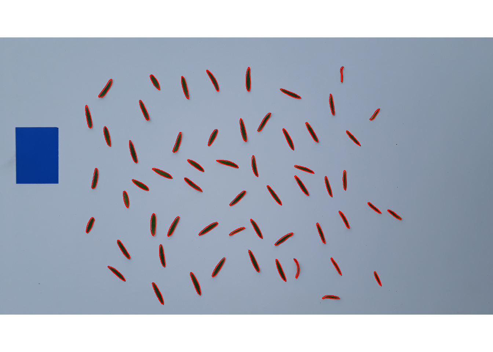
area <-
res$results |>
separate_col(img,
into = c("img", "avaliacao", "block"))
df_plot <-
area |>
sum_by(avaliacao, block, .vars = area) |>
group_by(avaliacao) |>
desc_stat(area, stats = c("mean, sd.amo"))
ggplot(df_plot, aes(avaliacao, mean)) +
geom_point() +
geom_errorbar(aes(ymin = mean - sd.amo,
ymax = mean + sd.amo),
width = 0.2) +
labs(x = "Período de avaliação",
y = "Área foliar (cm2 por planta)") +
theme_bw(base_size = 16)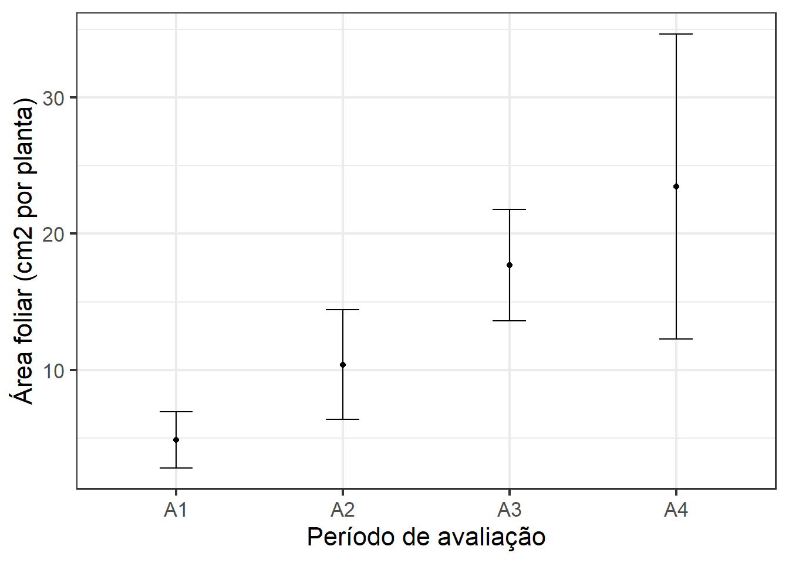
8.3 Filling ‘holes’
An important aspect to consider in leaf area measures is when leaves present ‘holes’. This can occur, for example, by the attack of pests. In this case, the area would have to be considered, because it was there! The image bellow is used as an example.
holes <- image_import("holes.jpg", plot = TRUE)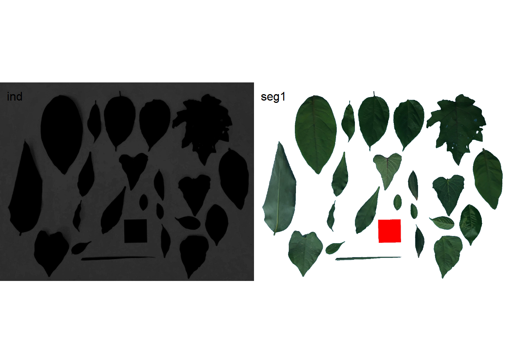
In this case, the missing area will not be computed using the default settings of analyze_objects(). To include this area as the leaf area, we can use the argument fill_hull(). Note that this will only work for missing areas within a closed object. If the missing area includes the original leaf contour, there is no (yet available) way to reconstruct the leaf perimeter.
af <-
analyze_objects(holes,
watershed = FALSE,
col_background = "white",
marker = "area",
marker_col = "red",
marker_size = 3,
show_image = FALSE,
save_image = TRUE,
dir_processed = tempdir(),
contour_size = 5)
# fill the missing area
af2 <-
analyze_objects(holes,
fill_hull = TRUE, # fill ' holes '
watershed = FALSE,
col_background = "white",
marker = "area",
marker_col = "red",
marker_size = 3,
show_image = FALSE,
save_image = TRUE,
prefix = "proc2_",
dir_processed = tempdir(),
contour_size = 5)
imgs <- image_import(pattern = "proc", path = tempdir())
image_combine(imgs)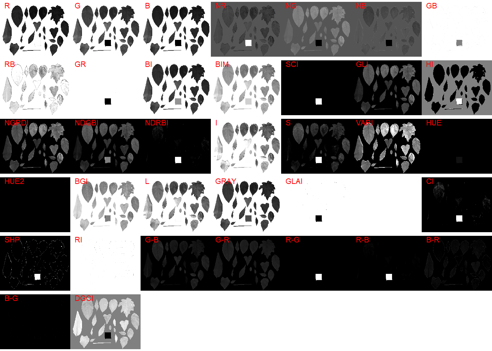
We can simply use the ratio between proc_img and proc_img2 to compute the injured area in this leaflet.
# percent of injuried area
100 - 88379 / 99189 * 100[1] 10.898398.4 Compound leaves
A simple leaf blade is undivided. The blade of a compound leaf is divided into several leaflets. In the following examples, I will show how to analyze simple and compound leaves with analyze_objects(), mainly if the goal is to obtain the measures for each leaf (e.g., mean area), where the number of objects (leaves) will influence the results.
The following images by Daniel Saueressig were obtained from the Sistema de Identificação Dendrológica Online - Floresta Ombrófila Mista9 and show examples of simple and compound leaves.
imgs <-
image_import(c("simple.jpg", "compound.jpg"),
plot = TRUE)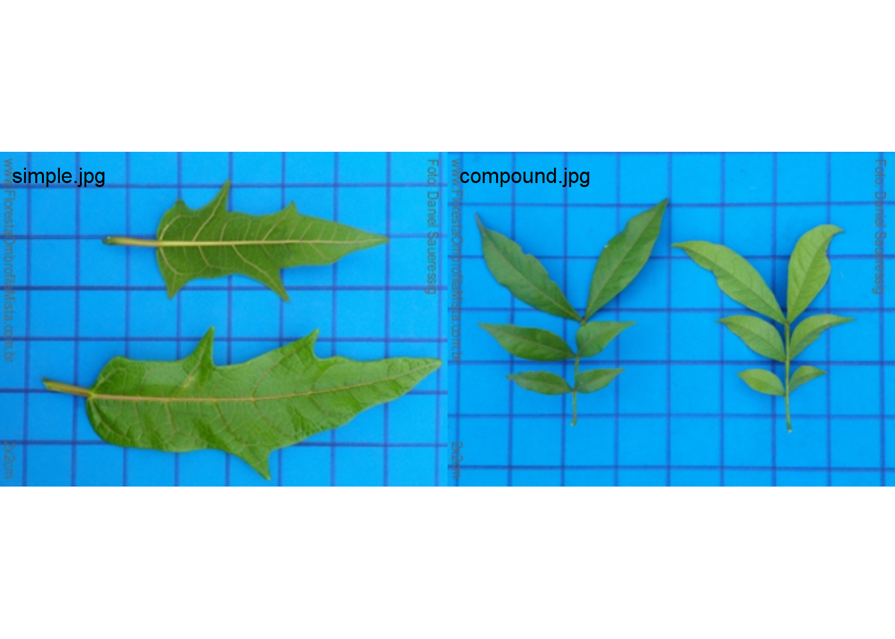
Analyzing non-touching simple leaves is fairly simple. We already did that. The squares in the background have 4 cm\(^2\). With this information, it is possible to obtain the image resolution with dpi(simple), which will be useful to adjust the measures. In this case, the estimated dpi is 48.65.
simple <- imgs$simple.jpg
sarea <- analyze_objects(simple, marker = "id")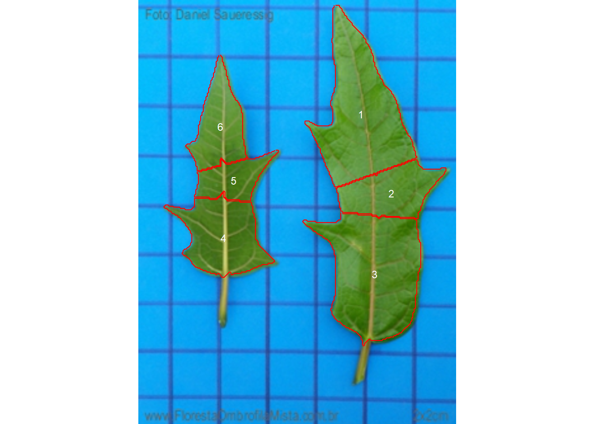
Note that with the default settings, the simple leaf was partitioned into small, segmented leaves. This can be solved by either using object_size = "large" or watershed = FALSE, to omit the watershed segmentation algorithm. The last is used here.
sarea <-
analyze_objects(simple,
watershed = FALSE,
marker = "id",
show_chull = TRUE)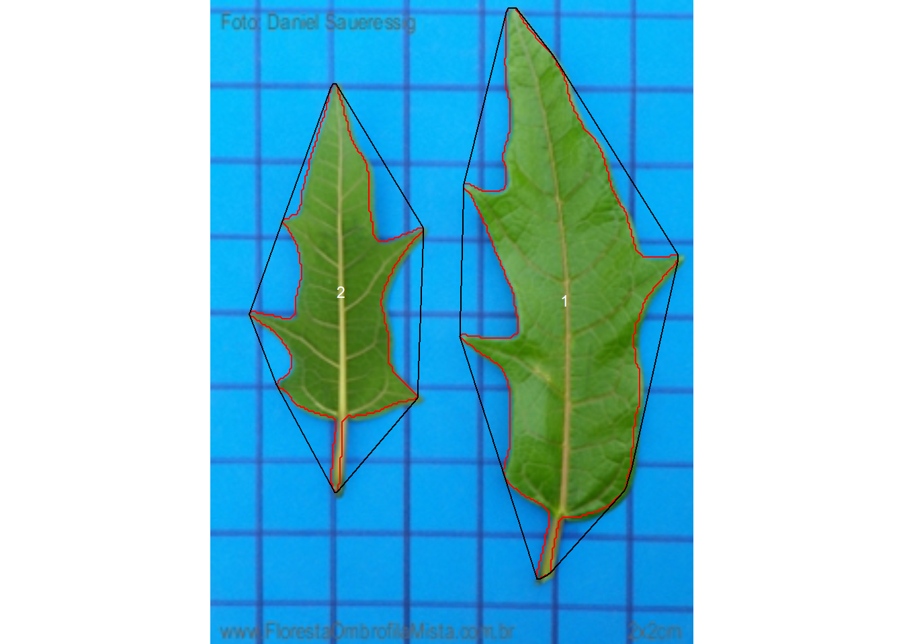
sarea_cor <- get_measures(sarea, dpi = 48.65)
sarea_cor id x y area area_ch perimeter radius_mean radius_min radius_max
1 1 184.643 156.157 41.417 56.267 41.308 4.285 1.070 7.953
2 2 68.637 151.759 20.035 31.852 31.560 3.030 1.095 5.717
radius_sd diam_mean diam_min diam_max major_axis minor_axis length width
1 1.801 8.57 2.139 15.906 13.661 4.225 15.474 6.041
2 1.215 6.06 2.190 11.433 9.237 3.194 11.068 4.698
radius_ratio eccentricity theta solidity convexity elongation circularity
1 7.435 0.133 1.489 0.736 0.685 0.610 41.200
2 5.220 0.147 1.552 0.629 0.638 0.576 49.715
circularity_haralick circularity_norm asm con cor var idm sav
1 2.379 3.356 0.043 1.671 0.845 6.401 0.663 23.134
2 2.493 4.106 0.048 3.761 0.811 10.970 0.647 22.952
sva sen ent dva den f12 f13
1 499.01 1.246 1.618 1.671 0.516 0.319 0.677
2 507.26 1.246 1.663 3.761 0.603 0.287 0.654For compound leaves, if the watershed segmentation is used, leaflets will probably be considered as different leaves, as can be seen below.
compound <- imgs$compound.jpg
carea <-
analyze_objects(compound,
show_segmentation = TRUE,
show_contour = FALSE,
marker = "id")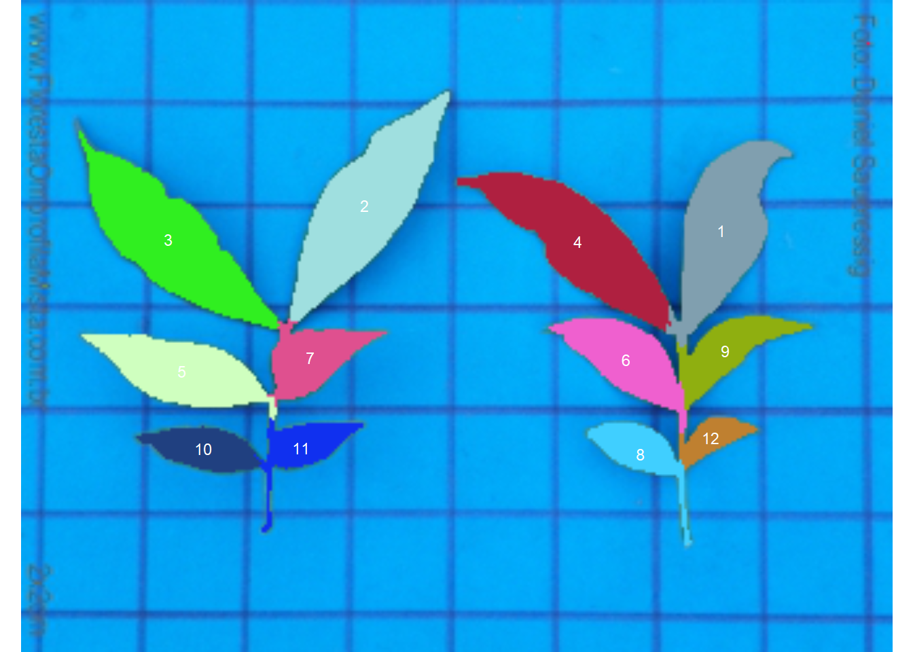
Therefore, using watershed = FALSE will solve this problem, since all leaflets connected by at least one pixel will be considered part of the same leaf.
carea <-
analyze_objects(compound,
watershed = FALSE,
show_segmentation = TRUE,
show_contour = FALSE,
show_chull = TRUE,
marker = "id")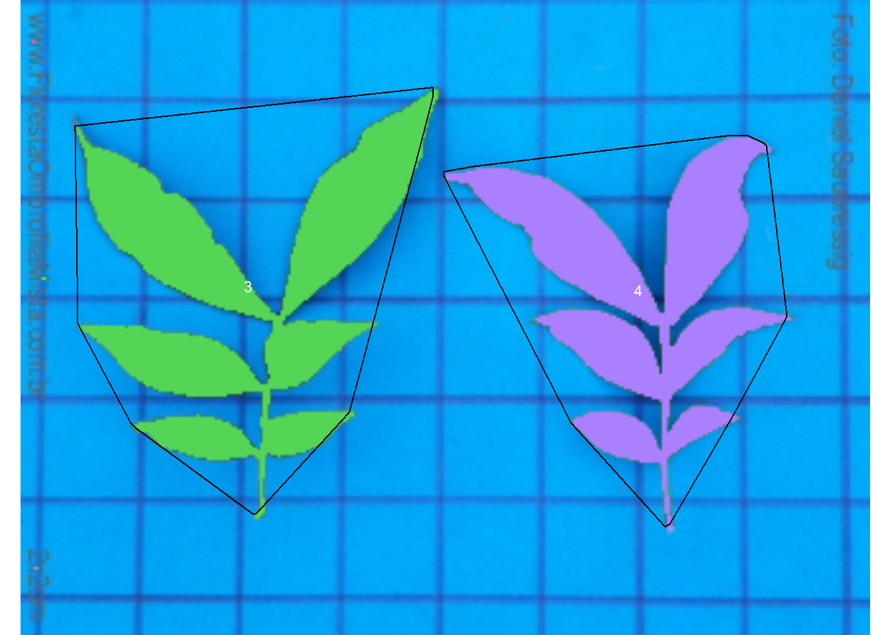
carea_cor <- get_measures(carea, dpi = 49.5)
carea_cor id x y area area_ch perimeter radius_mean radius_min radius_max
2 1 114.593 91.213 15.890 33.168 48.779 2.254 0.018 4.964
3 2 113.124 244.782 18.895 43.161 54.501 2.548 0.056 5.940
radius_sd diam_mean diam_min diam_max major_axis minor_axis length width
2 1.148 4.509 0.035 9.929 6.954 5.552 8.135 6.435
3 1.260 5.097 0.112 11.879 8.404 6.577 9.339 7.142
radius_ratio eccentricity theta solidity convexity elongation circularity
2 280.481 0.506 -0.263 0.479 0.425 0.209 149.739
3 105.791 0.656 0.709 0.438 0.479 0.235 157.203
circularity_haralick circularity_norm asm con cor var idm sav
2 1.964 12.783 0.047 2.223 0.753 5.507 0.666 27.342
3 2.023 13.363 0.054 1.100 0.838 4.386 0.711 18.751
sva sen ent dva den f12 f13
2 700.322 1.179 1.559 2.223 0.543 0.279 0.630
3 322.551 1.141 1.448 1.100 0.456 0.328 0.6588.5 Multiple images of the same sample
If users need to analyze multiple images from the same sample, the images must share the same filename prefix, which is defined as the part of the filename that precedes the first hyphen (-) or underscore (_). Then, when using get_measures(), measurements from leaf images called, for example, F1-1.jpeg, F1_2.jpeg and F1-3.jpeg will be combined into a single image (F1), displayed in the merge object. This is useful, for example, for analyzing large sheets that need to be split into multiple images or multiple sheets belonging to the same sample that cannot be scanned into a single image.
In the following example, five images will be used as examples. Each image has leaves of different species. The images have been split into different images that share the same prefix (eg L1_*, L2_*, and so on). Note that to ensure that all images are processed, all images must share a common pattern, in this case ("L"). The three dots in the lower right corner have a known distance of 5 cm between them, which can be used to extract the dpi of the image with dpi(). For teaching purposes only, I will assume that all images are 100 dpi resolution .
# entire images
imgs <-
image_import(pattern = "leaf",
plot = TRUE,
ncol = 2)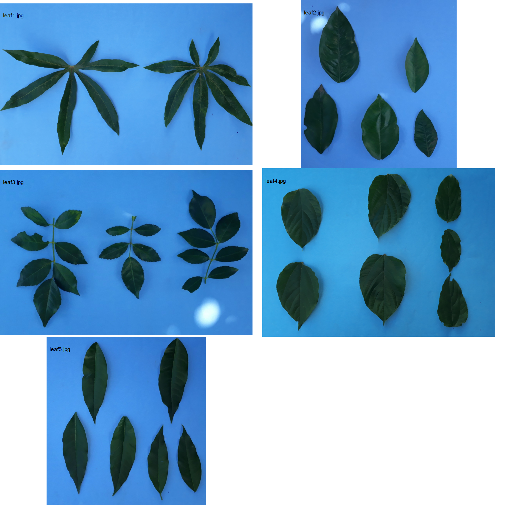
# images of the same sample
sample_imgs <-
image_import(pattern = "L",
plot = TRUE,
ncol = 5)
Here, I will use the pattern = "L" to indicate that all images with this pattern name should be merged. The green index ("G") is used to segment the leaves and watershed = FALSE is used to omit the watershed segmentation algorithm.
merged <-
analyze_objects(pattern = "L",
index = "B",
watershed = FALSE)Processing image L1_1 |==== | 8% 00:00:00 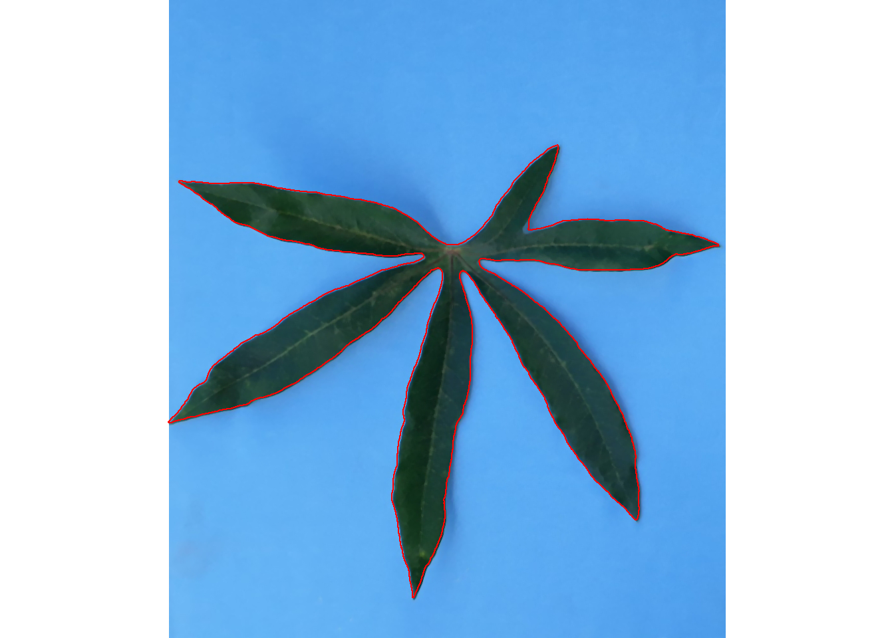
Processing image L1_2 |======= | 17% 00:00:00 
Processing image L2_1 |========== | 25% 00:00:00 
Processing image L2_2 |============== | 33% 00:00:01 
Processing image L3_1 |================== | 42% 00:00:01 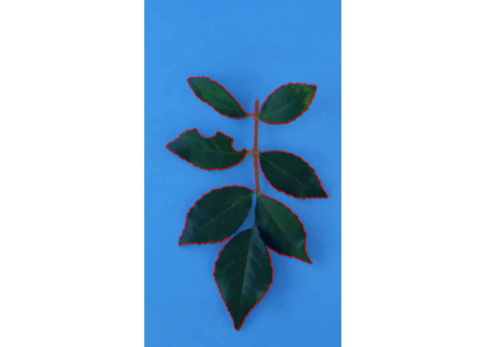
Processing image L3_2 |===================== | 50% 00:00:01 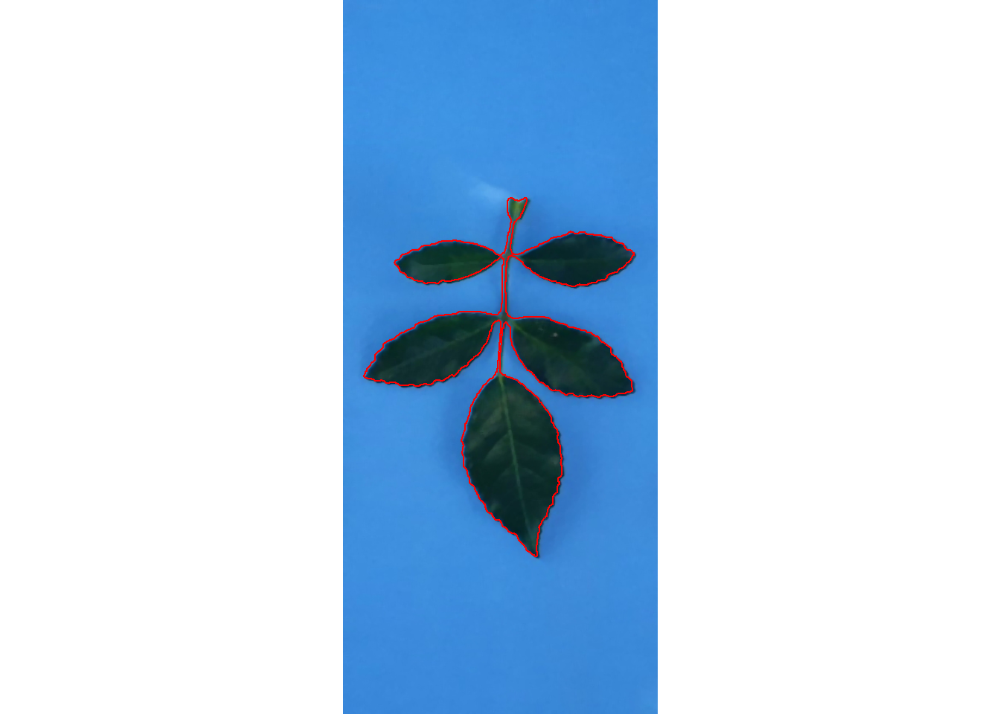
Processing image L3_3 |======================== | 58% 00:00:02 
Processing image L4_1 |============================ | 67% 00:00:02 Processing image L4_2 |================================ | 75% 00:00:02 Processing image L4_3 |=================================== | 83% 00:00:03 
Processing image L5_1 |====================================== | 92% 00:00:03 Processing image L5_2 |==========================================| 100% 00:00:04 --------------------------------------------
Image Objects
L1_1 1
L1_2 1
L2_1 2
L2_2 3
L3_1 1
L3_2 1
L3_3 1
L4_1 2
L4_2 2
L4_3 3
L5_1 3
L5_2 3
--------------------------------------------Done!
Using the get_measures() function it is possible to convert measurements from pixel units to metric units(cm\(^ 2\)).
merged_cor <- get_measures(merged, dpi = 100)Note that the merged_cor` is a list with three objects:
-
results: a data frame that contains the measurements of each individual object (in this case, leaf) of each analyzed image.
merged_cor$results img id x y area area_ch perimeter radius_mean radius_min
1 L1_1 1 427.651 516.720 102.091 7.427 133.758 6.213 0.565
2 L1_2 1 372.493 526.103 92.764 5.262 124.363 5.335 1.048
3 L2_1 1 251.395 282.805 46.317 1.188 28.464 3.937 2.525
4 L2_1 2 146.358 701.888 35.300 0.918 25.697 3.441 2.314
5 L2_2 1 326.111 391.144 19.027 0.488 19.495 2.614 1.660
6 L2_2 2 113.863 755.333 38.151 0.983 25.176 3.535 2.517
7 L2_2 3 376.185 784.765 16.317 0.418 17.262 2.367 1.530
8 L3_1 1 253.948 480.245 64.030 2.994 92.378 4.204 0.408
9 L3_2 1 200.085 436.480 30.204 1.462 63.319 2.829 0.065
10 L3_3 1 204.972 363.480 51.966 2.219 93.421 3.495 0.073
11 L4_1 1 270.224 326.531 54.353 1.392 29.454 4.181 3.401
12 L4_1 3 252.939 845.147 61.670 1.626 34.277 4.536 3.678
13 L4_2 1 291.918 235.531 61.482 1.597 33.038 4.544 3.158
14 L4_2 2 260.741 799.763 73.238 1.915 36.282 4.938 3.761
15 L4_3 1 206.165 213.369 29.187 0.752 22.372 3.097 2.053
16 L4_3 2 219.504 552.867 19.512 0.520 19.495 2.598 1.609
17 L4_3 3 229.146 937.131 34.152 0.900 27.177 3.471 2.211
18 L5_1 1 225.324 275.743 52.788 1.383 35.509 4.591 2.262
19 L5_1 2 120.375 887.851 30.186 0.821 30.527 3.827 1.648
20 L5_1 3 335.521 884.863 31.673 0.828 28.115 3.621 1.731
21 L5_2 1 338.958 300.167 45.584 1.189 34.031 4.329 2.190
22 L5_2 2 205.349 802.627 42.838 1.114 33.268 4.266 2.049
23 L5_2 3 535.296 819.587 44.986 1.175 33.299 4.300 1.992
radius_max radius_sd diam_mean diam_min diam_max major_axis minor_axis
1 11.927 2.899 12.426 1.130 23.853 19.865 15.143
2 10.164 2.189 10.669 2.096 20.327 15.129 13.217
3 5.915 0.911 7.873 5.049 11.830 10.478 5.708
4 5.204 0.819 6.882 4.627 10.408 9.307 4.873
5 4.134 0.736 5.227 3.320 8.268 7.300 3.375
6 5.093 0.665 7.070 5.035 10.185 8.955 5.462
7 3.609 0.606 4.734 3.060 7.219 6.510 3.237
8 9.466 2.050 8.407 0.817 18.932 15.228 8.684
9 6.578 1.425 5.658 0.130 13.155 9.857 7.103
10 7.816 1.656 6.990 0.146 15.632 12.405 8.416
11 5.708 0.559 8.362 6.803 11.415 9.917 7.035
12 6.506 0.705 9.071 7.356 13.012 10.548 7.549
13 6.585 0.821 9.088 6.316 13.170 10.968 7.277
14 6.971 0.780 9.875 7.521 13.941 11.609 8.148
15 4.379 0.668 6.195 4.107 8.758 8.257 4.534
16 3.939 0.648 5.196 3.218 7.879 7.069 3.549
17 5.147 0.799 6.943 4.422 10.294 8.810 5.089
18 7.740 1.623 9.182 4.523 15.481 13.610 5.029
19 6.794 1.523 7.654 3.297 13.589 11.055 3.579
20 6.200 1.321 7.241 3.463 12.399 10.717 3.823
21 7.462 1.610 8.659 4.379 14.925 13.162 4.461
22 7.335 1.584 8.533 4.098 14.670 12.765 4.353
23 7.465 1.584 8.600 3.983 14.930 13.069 4.449
length width radius_ratio eccentricity theta solidity convexity
1 21.589 722.973 21.109 0.638 0.158 0.349 0.402
2 16.895 579.711 9.696 0.805 0.600 0.448 0.387
3 11.347 234.524 2.343 0.390 1.502 0.990 0.928
4 10.313 198.853 2.249 0.371 -1.533 0.977 0.908
5 8.154 140.030 2.491 0.272 1.560 0.990 0.911
6 9.780 222.355 2.023 0.475 1.556 0.986 0.915
7 7.151 137.698 2.359 0.325 1.395 0.992 0.928
8 15.717 391.913 23.182 0.369 -1.550 0.543 0.384
9 10.814 323.238 101.214 0.511 1.564 0.525 0.395
10 13.411 365.216 107.425 0.467 1.539 0.595 0.385
11 10.444 285.934 1.678 0.610 1.484 0.992 0.903
12 11.942 313.755 1.769 0.552 1.428 0.964 0.871
13 12.132 297.157 2.085 0.473 -1.332 0.978 0.907
14 12.743 326.311 1.854 0.520 1.527 0.971 0.842
15 8.531 181.471 2.133 0.411 -1.535 0.986 0.895
16 7.552 145.609 2.448 0.322 1.537 0.954 0.868
17 9.491 210.669 2.328 0.344 1.471 0.964 0.845
18 15.329 204.320 3.423 0.174 -1.479 0.970 0.888
19 13.489 149.278 4.122 0.109 -1.564 0.934 0.917
20 12.264 159.481 3.581 0.156 1.382 0.971 0.901
21 14.760 183.121 3.408 0.152 -1.547 0.974 0.894
22 14.614 179.397 3.580 0.144 1.508 0.976 0.912
23 14.488 185.910 3.748 0.155 -1.450 0.973 0.916
elongation circularity circularity_haralick circularity_norm asm con
1 0.149 175.249 2.143 14.149 0.169 0.302
2 0.128 166.727 2.437 13.463 0.189 0.347
3 0.475 17.492 4.320 1.401 0.168 0.244
4 0.510 18.706 4.199 1.500 0.255 0.168
5 0.564 19.975 3.549 1.608 0.177 0.172
6 0.423 16.613 5.318 1.331 0.200 0.189
7 0.511 18.263 3.907 1.470 0.212 0.224
8 0.367 133.276 2.051 10.649 0.262 0.238
9 0.241 132.739 1.985 10.813 0.231 0.295
10 0.308 167.949 2.111 13.621 0.399 0.204
11 0.305 15.961 7.481 1.278 0.277 0.136
12 0.333 19.052 6.431 1.525 0.366 0.113
13 0.378 17.753 5.534 1.421 0.253 0.172
14 0.350 17.974 6.327 1.438 0.300 0.162
15 0.460 17.148 4.636 1.376 0.427 0.149
16 0.510 19.478 4.010 1.567 0.380 0.164
17 0.436 21.627 4.346 1.736 0.294 0.152
18 0.661 23.886 2.829 1.915 0.267 0.184
19 0.719 30.872 2.512 2.485 0.304 0.181
20 0.670 24.957 2.741 2.006 0.378 0.165
21 0.685 25.406 2.690 2.039 0.311 0.218
22 0.688 25.836 2.694 2.074 0.393 0.228
23 0.674 24.648 2.714 1.978 0.302 0.188
cor var idm sav sva sen ent dva den f12 f13
1 0.912 2.707 0.896 8.593 65.679 0.902 0.995 0.302 0.247 0.590 0.752
2 0.881 2.455 0.879 7.598 50.922 0.856 0.963 0.347 0.270 0.516 0.699
3 0.922 2.557 0.899 9.682 83.240 0.892 0.977 0.244 0.236 0.593 0.749
4 0.936 2.305 0.933 7.446 49.798 0.756 0.813 0.168 0.182 0.659 0.742
5 0.946 2.596 0.922 10.430 97.784 0.861 0.920 0.172 0.197 0.663 0.774
6 0.941 2.598 0.923 7.647 52.459 0.846 0.911 0.189 0.199 0.658 0.768
7 0.888 2.003 0.905 6.667 38.384 0.785 0.858 0.224 0.223 0.561 0.699
8 0.912 2.355 0.918 5.438 27.026 0.765 0.840 0.238 0.213 0.607 0.720
9 0.898 2.442 0.891 5.250 25.212 0.807 0.903 0.295 0.252 0.525 0.689
10 0.905 2.069 0.937 3.221 11.024 0.585 0.645 0.204 0.181 0.607 0.656
11 0.913 1.784 0.938 7.577 50.688 0.671 0.718 0.136 0.168 0.641 0.701
12 0.882 1.478 0.950 7.710 52.805 0.568 0.606 0.113 0.146 0.639 0.659
13 0.907 1.923 0.929 6.449 36.264 0.727 0.787 0.172 0.188 0.625 0.715
14 0.884 1.699 0.935 7.157 44.739 0.668 0.723 0.162 0.179 0.615 0.688
15 0.899 1.735 0.939 4.710 20.011 0.560 0.611 0.149 0.170 0.582 0.628
16 0.879 1.680 0.936 5.071 22.756 0.576 0.630 0.164 0.176 0.583 0.636
17 0.890 1.694 0.939 5.520 26.487 0.635 0.687 0.152 0.172 0.622 0.680
18 0.883 1.781 0.946 4.571 18.167 0.669 0.723 0.184 0.161 0.680 0.725
19 0.838 1.556 0.937 6.308 34.419 0.618 0.675 0.181 0.176 0.601 0.664
20 0.810 1.436 0.953 4.902 20.716 0.527 0.575 0.165 0.147 0.643 0.648
21 0.882 1.919 0.945 6.987 43.417 0.666 0.723 0.218 0.166 0.673 0.721
22 0.755 1.467 0.934 6.771 40.603 0.529 0.585 0.228 0.185 0.526 0.584
23 0.866 1.703 0.942 6.836 40.858 0.653 0.706 0.188 0.168 0.648 0.701-
summary: a data frame that contains the summary of the results, containing the number of objects in each image (n) the sum, mean and standard deviation of the area of each image, as well as the average value for all others measurements (perimeter, radius, etc.)
merged_cor$summary img n area_sum area_mean area_sd area_ch perimeter radius_mean radius_min
1 L1_1 1 102.091 102.091 0.000 7.427 133.758 6.213 0.565
2 L1_2 1 92.764 92.764 0.000 5.262 124.363 5.335 1.048
3 L2_1 2 81.617 40.809 7.790 1.053 27.080 3.689 2.419
4 L2_2 3 73.495 24.498 11.901 0.630 20.644 2.838 1.902
5 L3_1 1 64.030 64.030 0.000 2.994 92.378 4.204 0.408
6 L3_2 1 30.204 30.204 0.000 1.462 63.319 2.829 0.065
7 L3_3 1 51.966 51.966 0.000 2.219 93.421 3.495 0.073
8 L4_1 2 116.023 58.011 5.174 1.509 31.866 4.358 3.540
9 L4_2 2 134.720 67.360 8.313 1.756 34.660 4.741 3.459
10 L4_3 3 82.851 27.617 7.445 0.724 23.015 3.056 1.958
11 L5_1 3 114.648 38.216 12.642 1.011 31.384 4.013 1.880
12 L5_2 3 133.409 44.470 1.444 1.159 33.533 4.299 2.077
radius_max radius_sd diam_mean diam_min diam_max major_axis minor_axis
1 11.927 2.899 12.426 1.130 23.853 19.865 15.143
2 10.164 2.189 10.669 2.096 20.327 15.129 13.217
3 5.559 0.865 7.378 4.838 11.119 9.893 5.290
4 4.279 0.669 5.677 3.805 8.557 7.588 4.025
5 9.466 2.050 8.407 0.817 18.932 15.228 8.684
6 6.578 1.425 5.658 0.130 13.155 9.857 7.103
7 7.816 1.656 6.990 0.146 15.632 12.405 8.416
8 6.107 0.632 8.717 7.079 12.214 10.232 7.292
9 6.778 0.801 9.482 6.919 13.556 11.288 7.712
10 4.488 0.705 6.111 3.915 8.977 8.046 4.391
11 6.911 1.489 8.026 3.761 13.823 11.794 4.144
12 7.421 1.593 8.597 4.154 14.842 12.999 4.421
length width radius_ratio eccentricity theta solidity convexity
1 21.589 722.973 21.109 0.638 0.158 0.349 0.402
2 16.895 579.711 9.696 0.805 0.600 0.448 0.387
3 10.830 216.689 2.296 0.381 -0.016 0.983 0.918
4 8.362 166.694 2.291 0.357 1.504 0.989 0.918
5 15.717 391.913 23.182 0.369 -1.550 0.543 0.384
6 10.814 323.238 101.214 0.511 1.564 0.525 0.395
7 13.411 365.216 107.425 0.467 1.539 0.595 0.385
8 11.193 299.845 1.723 0.581 1.456 0.978 0.887
9 12.437 311.734 1.969 0.496 0.097 0.975 0.874
10 8.525 179.250 2.303 0.359 0.491 0.968 0.869
11 13.694 171.027 3.709 0.146 -0.554 0.958 0.902
12 14.620 182.810 3.579 0.150 -0.496 0.974 0.908
elongation circularity circularity_haralick circularity_norm asm con
1 0.149 175.249 2.143 14.149 0.169 0.302
2 0.128 166.727 2.437 13.463 0.189 0.347
3 0.493 18.099 4.259 1.451 0.211 0.206
4 0.499 18.284 4.258 1.470 0.196 0.195
5 0.367 133.276 2.051 10.649 0.262 0.238
6 0.241 132.739 1.985 10.813 0.231 0.295
7 0.308 167.949 2.111 13.621 0.399 0.204
8 0.319 17.506 6.956 1.401 0.321 0.125
9 0.364 17.864 5.930 1.430 0.277 0.167
10 0.469 19.418 4.331 1.560 0.367 0.155
11 0.683 26.572 2.694 2.135 0.317 0.176
12 0.682 25.297 2.699 2.030 0.336 0.211
cor var idm sav sva sen ent dva den f12 f13
1 0.912 2.707 0.896 8.593 65.679 0.902 0.995 0.302 0.247 0.590 0.752
2 0.881 2.455 0.879 7.598 50.922 0.856 0.963 0.347 0.270 0.516 0.699
3 0.929 2.431 0.916 8.564 66.519 0.824 0.895 0.206 0.209 0.626 0.746
4 0.925 2.399 0.917 8.248 62.876 0.831 0.896 0.195 0.206 0.627 0.747
5 0.912 2.355 0.918 5.438 27.026 0.765 0.840 0.238 0.213 0.607 0.720
6 0.898 2.442 0.891 5.250 25.212 0.807 0.903 0.295 0.252 0.525 0.689
7 0.905 2.069 0.937 3.221 11.024 0.585 0.645 0.204 0.181 0.607 0.656
8 0.897 1.631 0.944 7.644 51.747 0.620 0.662 0.125 0.157 0.640 0.680
9 0.896 1.811 0.932 6.803 40.502 0.697 0.755 0.167 0.183 0.620 0.702
10 0.889 1.703 0.938 5.100 23.084 0.590 0.643 0.155 0.173 0.596 0.648
11 0.844 1.591 0.946 5.260 24.434 0.605 0.658 0.176 0.162 0.641 0.679
12 0.834 1.696 0.941 6.865 41.626 0.616 0.672 0.211 0.173 0.616 0.669-
merge: a data frame that contains the results merged by image prefix. Note that in this case the results are displayed by L1, L2, L3, L4 and L5.
merged_cor$merge img n area_sum area_mean area_sd area_ch perimeter radius_mean radius_min
1 L1 2 194.854 97.427 0.000 6.345 129.061 5.774 0.807
2 L2 5 155.112 32.653 9.846 0.841 23.862 3.264 2.161
3 L3 3 146.200 48.733 0.000 2.225 83.039 3.509 0.182
4 L4 7 333.594 50.996 6.977 1.330 29.847 4.052 2.986
5 L5 6 248.056 41.343 7.043 1.085 32.458 4.156 1.979
radius_max radius_sd diam_mean diam_min diam_max major_axis minor_axis length
1 11.045 2.544 11.547 1.613 22.090 17.497 14.180 19.242
2 4.919 0.767 6.527 4.322 9.838 8.741 4.657 9.596
3 7.953 1.710 7.018 0.364 15.906 12.497 8.068 13.314
4 5.791 0.713 8.103 5.971 11.582 9.856 6.465 10.718
5 7.166 1.541 8.311 3.957 14.332 12.396 4.282 14.157
width radius_ratio eccentricity theta solidity convexity elongation
1 651.342 15.402 0.722 0.379 0.398 0.395 0.139
2 191.691 2.293 0.369 0.744 0.986 0.918 0.496
3 360.122 77.274 0.449 0.517 0.554 0.388 0.305
4 263.609 1.999 0.479 0.681 0.973 0.877 0.384
5 176.918 3.644 0.148 -0.525 0.966 0.905 0.683
circularity circularity_haralick circularity_norm asm con cor var
1 170.988 2.290 13.806 0.179 0.324 0.896 2.581
2 18.191 4.259 1.460 0.204 0.201 0.927 2.415
3 144.655 2.049 11.694 0.297 0.245 0.905 2.289
4 18.263 5.739 1.464 0.322 0.149 0.894 1.715
5 25.934 2.697 2.083 0.326 0.194 0.839 1.644
idm sav sva sen ent dva den f12 f13
1 0.888 8.096 58.300 0.879 0.979 0.324 0.259 0.553 0.726
2 0.916 8.406 64.697 0.828 0.896 0.201 0.207 0.627 0.746
3 0.915 4.637 21.087 0.719 0.796 0.245 0.215 0.580 0.688
4 0.938 6.515 38.444 0.636 0.686 0.149 0.171 0.618 0.677
5 0.943 6.062 33.030 0.610 0.665 0.194 0.167 0.629 0.674The area_sum of img L1 is the sum of the two sheets (one in each image).
sum(merged_cor$results$area [1:2])[1] 194.855Below, I will create a plot to show the distribution of leaf area
df_leaf <-
merged_cor$results %>%
separate(img , into = c("img", "code"))
# leaf area of the different species
p1 <-
ggplot(df_leaf, aes(img, area)) +
geom_boxplot() +
geom_jitter(color="red") +
labs(x = " Image ", y = expression(Area ~(cm^2)))
p2 <-
ggplot(df_leaf , aes(x = img , y = area)) +
stat_summary(fun = sum,
geom = "bar",
col = " black ") +
labs(x = " Image ", y = expression(Total~area ~(cm^2)))
# solidity of the different species
p3 <-
ggplot(df_leaf , aes(x = img , y = solidity)) +
geom_boxplot() +
geom_jitter(color="red") +
labs(x = "Image", y = "Solidity")
arrange_ggplot(p1, p2, p3)Footnotes
Singer, M.H. 1993. A general approach to moment calculation for polygons and line segments. Pattern Recognition 26(7): 1019–1028. doi: 10.1016/0031-3203(93)90003-F.↩︎
Chen, C.H., and P.S.P. Wang. 2005. Handbook of Pattern Recognition and Computer Vision. 3rd ed. World Scientific.↩︎
Claude, J. 2008. Morphometrics with R. Springer.↩︎
Montero, R.S., E. Bribiesca, R. Santiago, and E. Bribiesca. 2009. State of the Art of Compactness and Circularity Measures. International Mathematical Forum 4(27): 1305–1335.↩︎
Lee, Y., and W. Lim. 2017. Fórmula de cadarço: conectando a área de um polígono e o produto vetorial vetorial. The Mathematics Teacher 110(8): 631–636. doi: 10.5951/MATHTEACHER.110.8.0631.↩︎
Montero, R.S., E. Bribiesca, R. Santiago, and E. Bribiesca. 2009. State of the Art of Compactness and Circularity Measures. International Mathematical Forum 4(27): 1305–1335↩︎
Haralick, R.M. 1974. A Measure for Circularity of Digital Figures. IEEE Transactions on Systems, Man, and Cybernetics SMC-4(4): 394–396. doi: 10.1109/TSMC.1974.5408463.↩︎
Haralick, R.M., K. Shanmugam, and I. Dinstein. 1973. Textural Features for Image Classification. IEEE Transactions on Systems, Man, and Cybernetics SMC-3(6): 610–621. doi: 10.1109/TSMC.1973.4309314↩︎
https://www.florestaombrofilamista.com.br/sidol/?menu=glossary↩︎